סלובקיה- גן העדן הירוק
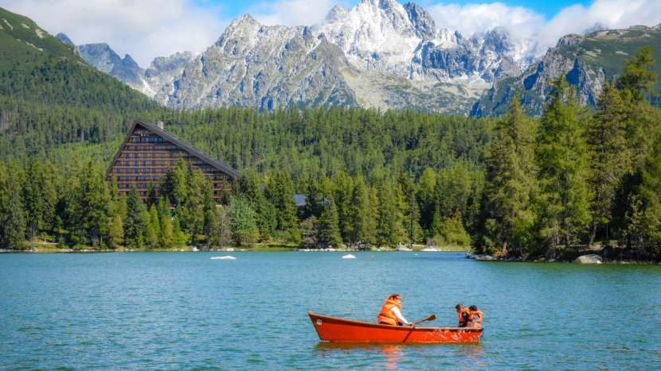
סלובקיה הייתה מזה זמן רב ברשימת היעדים הפוטנציאליים ואיכשהו אף פעם לא יצא לנו לטייל שם עד עכשיו, תמיד היה יעד ״חם״ יותר, או העונה לא מתאימה. אחרי שהיינו בצ׳כיה בשנה שעברה ובאיטליה השנה- שניהם מחוץ לעונה, החלטתי שהפעם ננסה טיול ב״עונה״, דמיינתי לי טיול ביערות ושחיה באגמים, טיולי אופניים וראפטינג, וכמובן טיולי הליכה בהרים כשהכל פתוח מסביב ולא צריך לחשוב איך ל״שבץ״ את הימים כך שהילדים יזכו בסיבוב ברכבת הרים אלפינית או פארק חבלים.
סלוביקה הפתיעה ממש לטובה, עם נופים מדהימים של הריםֿ יערות ואגמים ושפע אטרקציות לילדים. סימוני השבילים מצויינים, יש מסעדות ובתי קפה בכל נקודת עניין, הכל נגיש, הכל פשוט מסודר ומאורגן.
כרגיל לפני שנפרט על המסלול, הנה פירוט מנהלות:
טיסות: כרטיסי טיסה שנקנו כמה חודשים מראש, עם חברת אל על לבודפשט (בתקופה זו עדיף ללכת על בטוח וגם המחיר היה עדיין סביר). הזמנו ל- 15 יום, נטו 13 (הגעה מאוחרת וחזרה מוקדמת). לסלובקיה ניתן להגיע גם מוינה או קרקוב, מבחינת המחיר יצא לנו יותר זול דרך בודפשט, להבא בטוח נשלב עם דרום פולין.
רכב: הזמנו רכב suv אוטומט מ-budget, קיבלנו פיג'ו 3008, סה״כ היה נוח מאוד. עלות נהג נוסף 9 יורו ליום, צריך גם לשלם אגרה למעבר גבול לסלובקיה עוד 40 יורו.
כבישים מהירים בסלובקיה: צריך לקנות vignette באתר הבא: https://www.sk-vignette.com/en/e-vignette/register/sk/6/
היינו צריכים עבור 11 יום אבל אפשר לקנות או ל10 ימים או לחודש כי המחיר ל-10 ימים ואז לעוד יום אחד לא משתלם כלל ויוצא יותר זול כבר לקנות לחודש. פשוט מכניסים את מס׳ הרישוי של הרכב ומשלמים אונליין ומגיע אישור למייל.
מלונות- הזמנו דרך בוקינג ו-airbnb כולם היו מצויינים, אפרט בהמשך.
לבוש- אמנם הגענו בקיץ אבל הטמפ׳ נעה בין 35 מעלות בשיא החום בבדופשט ל-5 מעלות בלילה בסלובקיה. כך שכדאי להביא קצר אבל גם מכנס ארוך, ג׳קט ואפילו פליז וסופטשל אם עולים להרים. נעליים- נעליים קלות ונעלי הליכה טובות ולקחנו גם נעלי ים לשחיה באגמים.
מזגנים- כמעט ואין באף ביתֿ או בקתה בסלובקיה מזגנים, והאמת ממש לא צריך. ביומיים הראשונים היה חום של 30-34 מעלות ובבקתה ביער הבנויה מעץ לא הרגשנו שחם בכלל!
אפליקציות מומלצות: בולט bolt בכדי להזמין מוניות בהונגריה. Mappy אפליקציה מצויינת למסלולי הליכה, מראה את כל המסלולים בסביבה וכן אפשר ממש לתכנן איתה את המקטעים להליכה וכמה זמן זה יקר. Go pass- מעין גרופון של סלובקיה, נרשמים באינטרנט ומקבלים כרטיס דיגיטלי, שווה לקנות דרכם את הכרטיסים לרכבלים ולפארקי המים כי לאחר ניצול כרטיס מקבלים הנחה cashback וזה מעט מוזיל עלויות.
עלויות: סלובקיה יקרה יחסית למזרח אירופה. אמנם מחירי הלינה סבירים ממש וסל הקניות בסופר זול מאוד, אבל מחירי המסעדות ומחירי האטרקציות מתקרבות לעלויות של מערב אירופה. למשל- רכבלים עלות לכיוון נעה סביב 20 יורו, הלוך חזור כבר 30 לאדם. מסעדות מחיר מנת ילדים נעה בין 10-15 יורו ללא שתיה, מנה עיקרית סביב 20 יורו
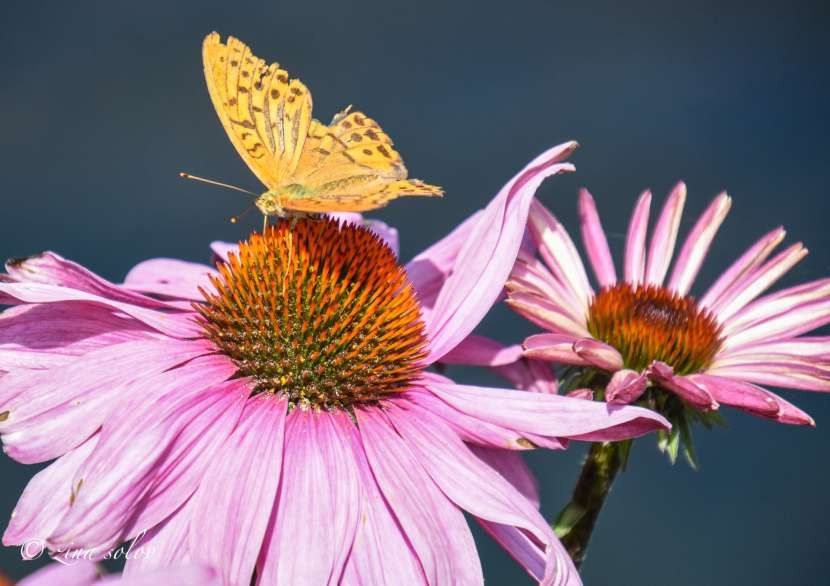
.והנה סיכום הטיול המפורט:
14.8.25 הגעה
טיסת ערב לבודפשט,שיצאה בזמן. נחתנו ב-22:30 ולקחנו מונית דרך אפליקציית בולט למלון ליד שדה התעופה: Airport Almáskert Panzió מלון פשוט ונקי עם חדר ל-4. עלות מונית כ-4000 פורינט. מקלחות וקרסנו לישון.
15.8.25 שלום הונגריה שלום סלובקיה
התעוררנו בנחת, רעננים ומוכנים לתחילת הטיול. לאחר ארוחת הבוקר, שבית המלון מכין במיוחד לכל לקוח לפי הזמנה ערב לפני מתפריט מצומצם, לקחנו מונית דרך בולט לתחנת השכרת הרכב. הגענו תוך 5 דקות לסניף budget וקיבלנו את הרכב, פז׳ו 3008. ברגע שהיה לנו מס׳ רישוי של הרכב, הזמנתי את הויגנטה (אגרת נסיעה בכבישים המהירים בסלובקיה) ויצאו לדרך.
העצירה הראשונה שלנו, לאחר שעה ורבע נסיעהֿ, היתה בעיירה-Visegrad, או יותר נכון בסמוך אליה, שם יש פארק בילוי לילדים הכולל מגלשות הרים, פארק חבלים, אומגות מגדל תצפית ובכלל פנינה יפה בטבע ההונגרי, הכל על גבעה מיוערת ממנה נשקף נהר הדנובה.
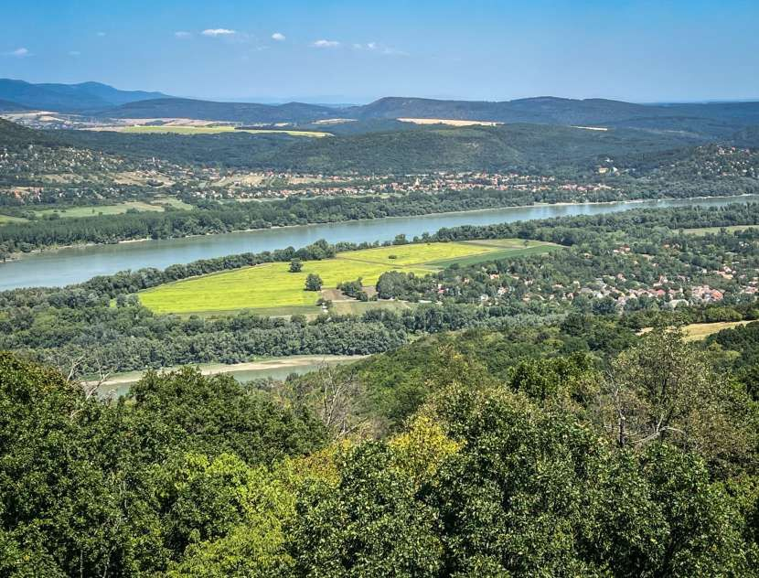
עם המזל שלנו, שנורא רצינו לברוח מהחום הנוראי בארץ, קיבלנו את אותו החום בהונגריה עם טמפ׳ של 35 מעלות, כך שלא בניתי על לטייל בסביבה יותר מידי.
הסתפקנו ב 2 סיבובים על מגלשת ההרים, (יש שם 2, אחת על מסילה ויותר בטיחותית והשניה בתוך תעלה כזו שהיא יותר מועדת להתהפכויות, אבל בגלל שיש שני מסלולים התור זז ממש מהר). אחרי כן קינחנו בגלידה (גלידה אמריקאית פשוטה אבל משום מה הילדים דירגו אותה כגלידה הכי טובה שהם אכלו לך תבין). לאחר מכן טיילנו קצת למגדל התצפית הנמצא כ-900 מטר הליכה משם במעלה הגבעה. מזלינו הטוב מס׳ 2: פיצקה מתחה שריר ברגל (טרם הטיסה) ועכשיו צולעת ובקושי הולכת, מה שאומר שלפחות 500 מטר מה-900 מטר למגדל התצפית פיצקה נישאה בשק קמח ע״י החצי.
מגדל התצפית חביב ובתמורה לתשלום סמלי ניתן לעלות במדרגות הספירלה עד למעלה, מה שכמובן עשינו, הנוף יפה רואים את הדנובה ואת מצודת ויסגראד ברקע, אבל פרט לכך וכמה צרעות למעלה אין שם משהו מעניין. במקום יש גם אומגות (למשקלים כבדים יותר, אם זוכרת נכון מעל 40 ק״ג) ופארק חבלים אבל כאמור ב 35 מעלות אין שום סיכוי שנעבור את העינוי הזה. תכננתי גם לטייל במצודת ויסגראד שנראית ממש מרשימה, אבל כאמור ויתרנו מפאת החום והיכולת של פיצקה ללכת.
את הגבול לסלובקיה חצינו ליד העיר אסטרגום- Esztergom וקצת הצטערתי שלא תכננתי שם עצירה, העיר נראית יפה ומעניינת, עם כניסה ענקית הנראת למרחקים ורחוב ראשי שנראה מאוד מזמין לטיול. חצינו את הגשר והנה אנחנו בסלובקיה. מכאן יש לנו עוד כשעתיים נסיעה עד הבקתה שלנו, אז כיוונו לעיירה באנסקה ביסטריצה בכדי שנוכל לעשות עוד עצירה להתרעננות והצטיידות. הניווט לוקח אותנו בכבישי כפר, די משעממים והנהיגה די מתסכלת כי בכל עת המהירות משתנה בים 30 ל-70 קמ״ש. כעבור כ-40 דקות עלינו סוף סוף לכביש המהיר שם הנסיעה כבר נוחה וזורמת במהירות סבירה של 130-100 קמש.
הגענו לעיירה באנסקה ביסטריצה לקראת השעה שלוש וחצי. במקור תכננתי לעשות סיבוב בעיר העתיקה שאומרים שהיא יפה ושווה עצירה אולם כאמור בגלל החום והצליעה של פיקצה, וגם הרעב שלנו, החלטנו לעשות עצירת אוכל וקניות בקניון של העיר במקום לצאת לשיטוט במרכז העיר. הקניון די גדול, עם המון חנויות ומותגים וכן שפע בתי קפה ומסעדות, כיאה לכל קניון שמכבד את עצמו. מצאנו סושיה, והילדים נורא ביקשו לאכול סושי, לאחר מכן קפצנו לסניף דקטלון שנמצא בקניון להצטיידות, נעליים לצוציק (שהתאהב בנעלי בד שקנינו לו בצ׳כיה שנה שעברה שנקרעו, עברנו לפחות 5 חנויות נעליים עד שמצאנו את אותן הנעליים). והכי חשוב הצטיידנו במצרכים בסיסיים לבקתה היות ולא נראה שיש בסביבה סופרים גדולים.ֿ שבעים ורעננים יצאנו לחלק האחרון בנסיעה לכיוון הדירה שלנו, נסיעה קצרצרה של 40 דקות.
את הבתקה הזמנתי דרך airbnb, ישר ראיתי תמונות והתאהבתי! מדובר בקתה קסומה ביער, באזור שנקרא dolna lehota , חמש דקות הליכה מאגם Krpacovo. האיזור מתוייר בעיקר ע״י מקומיים, כנראה כי נמצא מהצד הדרומי של הר החופוק, כך שהוא יחסית מרוחק מהאטרקציות של הטטרה הנמוכה, אבל החוויה של בקתה ביער והאגם היא מטורפת. מצרפת קישור לבקתה:
בערב, ממש לפני השקיעה, יצאנו לסיבוב לראות את הסביבה שלנו ובעיקר את האגם. הליכה של 5-7 דקות בתוך יער מקסים בדרך יש שילוט לאגם, ואם חשבתם שאנחנו לבד ביער אז ממש לא, המקום מלא בבקתות נופש אבל היופי הוא שהן כולם יחסית מוסתרות ביער כך שממש מרגישים פרטיות. האגם מקסים, קטן, מוקף יערות, דשא מסביב, מקומיים באים לשם לקמפינג ודייג.
את הערב בילינו בבקתה, יש שם מרפסת הצופה ממש אל היער, וזכינו לראות סנאי סקרן שקיפץ לו בין העצים. החסרון היחיד של הבקתה היה המדרגות לקומה השניה, שהיו ממש תלולות ומפחידות, כך שאם ילדים ממש קטנים הייתי נזהרת
16.8.25- מנוחה בבקתה
החצי תמיד מתלונן שאנחנו מגיעים למקומות יפים ולא מנצלים אותם. אז היום, יום שלם מוקדש רק למנוחה ובילוי בקרבת הבקתה. קמנו לבוקר מקסים, ציפורים מצייצות והאוויר היער מרענן ממש, אני יצאתי לסיבוב בוקר סביב הבקתה וביער, ראיתי סנאי ומלא פטריות. לאחר מכן הכנו ארוחת בוקר, התפנקנו במרפסת הצופה ליער. בהמשך קפצנו לסופר להצטיידות, אין בעיירה סופר וצריך היה לנסוע רבע שעה עד למינימרקט הקרוב.
היום גם נורא חם- 32 מעלות, לא מזג אויר לעשות טיולים ביער, ממש חששתי שנתבשל בקתת העץ שלנו אבל לא הרגשנו את החום, אוויר היער והעצים סיפקו צל נפלא.
לקראת הצהריים החלטנו לבדוק את האגם שלנו, היום יום שבת (סוף שבוע גם בסלובקיה) והאגם הומה באנשים, בעיקר מקומיים, אבל יש שפע מקום על הדשא הרך והמים קרירים ומרעננים.
הצוציקים נורא רצו סאפ אז שכרנו סאפ במסעדונת ממול, מאוד זול, 5 יורו לשעה, ואז בכלל לא יכלנו לגרור אותם חזרה. שטנו בכל האגם (שאינו גדול כלל) הילדים קפצו למים ושחו והיה ממש כיף!
חזרנו לארוחת צהריים קלילה בבקתה שלנו, וכמובן הפסקת שנ״צ, אני חייבת לומר שלישון במרפסת לצלילי הציפורים והאוויר הצח היה מושלם.
מאוחר יותר יצאנו שוב לטבילה באגם, כבר התקרר והיו פחות אנשים, הצוציקים שחו ואנחנו שתינו אחלה בירה מהמסעדה ליד. בערב עשינו על האש, אכלנו בחוץ ולאחר מכן הדלקנו מדורה (יש בור מיוחד) וצלינו לנו מרשמלו לקינוח. היה יום רגוע ומושלם.
17.8.25- 4 רכבלים ופסגה אחת
בלילה היתה סערה, גשם ברקים ורעמים ולמרות זאת ישנו מצויין. קמנו לבוקר רענן כשריח הגשם עדיין באוויר.תכננו היום לעלות להר החופוק, ולפי התחזית נראה שיהיה יום יפה, לא חם כמו אתמול אבל ללא גשם, אם כי מעונן בשעות הבוקר.
על הר החופוק פזורות מצלמות web שניתן להכנס ולראות את מצב ההר מכמה זוויות, נכנסתי לאתר וחשכו עיני- הכל ערפל. החלטנו לחכות ולקחנו את הבוקר באיזי. אחרי 10 יצאנו לדרך, נסיעה קצרה של 20 דקות דרך היער הביאה אותנו לצד הדרומי שם ההר ולרכבל הראשון- krupova
.כמה פרטים טכניים: ניתן לעלות לפסגת הר החופוק משני כיוונים, הצד הצפוני (והפופולארי יותר) מכיוון עמק דמנובסקה ואיזור יאסנה (jasna) או מהצד הדרומי (כמונו) מכיוון קרופובה. לא משנה מאיזה כיוון תגיעו, תצטרכו 2 רכבלים כדי לעלות לפסגה.
הנה פירוט הרכבלים:
מבחינת המחיר- כשאתם מזמינים כרטיס הלוך חזור הכרטיס כולל את כל ארבעת הרכבלים (מהצד הצפוני לדרומי וחזרה),המחיר מאוד גבוה סביב 100 יורו לארבעה אנשים (זוגֿ+שניים) דרך go pass,אבל גם אם חוסכים בכיוון ומזמינים כיוון אחד בלבד, לא נראה שהמחיר צונח משמעותית- 20 יורו במקום 30 משהו כזה.
אנחנו החלטנו לנצל את כל ארבעת הרכבלים ולטייל מהצד הדרומי לצפוני וחזרה (כאמור מרחק הנסיעה מהבתקה לצד הדרומי היה 20 דקות לעומת שעה וחצי נסיעה לצד הצפוני). מדובר ברכבלים חדשים ומתוחזקים היטב.
באתר יש חניה מסודרת ליד הרכבל בעלות של 10 יורו ליום (אלה המחירים עבור חניה בסלובקיה).
עוד פרט חשוב, הרכבל מקרופובה לקוסודרבינה (התחנה הבאה) פועלת פעם בחצי שעה לחצי שעה, שימו לב כי ייתכן ותצטרכו לחכות טיפה).
מתחנת קרופובה עלינו לתחנת קוסודרבינה, ומשם לפסגת החופוק בגובה 2024 מטר. למעלה די קר (גם בקיץ), צריך לקחת בתיק מעיל וכובע. מעילים ופליזים זכרתי לקחת אך לא כובעים, כמובן שיש שם חנות גזלן שמוכרת כובע או חם-צואר בעלות פסיכית של 20 יורו, כמובן שלצורך שלום הטיול לא היתה ברירה ונפרדנו מ-40 יורו נוספים העיקר שהצוציקים לא מתבכיינים שקר להם בראש.
כשעלינו, הערפל שראינו בבבוקר במצלמות התפזר כמעט במלואו אבל עדיין היו עננים, הנוף פשוט משגע.
מהרכבל יש שביל שמוביל לפסגה ויש עוד שפע שבילים שמובילים למסלולים שונים על ההר, וישנו גם שביל פנורמי. בשעה הזו המקום היה די עמוס והראות חלקית, לכן הסתפקנו בלטפס לפסגה, ומשם חזרנו למסעדה שמעל הרכבל להכין שנמצא הפסל של דמיאן הדרקון בעל 3 הראשים. הזמנו קפה ושוקו חם לצוציקים שהם טענו היה הכי טעים בטיול הזה.
אחרי שהתחממנו המשכנו לצד הצפוני ברכבל חופוק-פרהיבה, שם עצרנו לראות את הכבשים החמודות. יש שם גם דוכני מזון ובירה וכן פעילות חמודה של החווה של הכבשים. משם ירדנו לתחנת בילאיה פוט (שזו התחנה הראשונה למי שמגיע מהצד הצפוני של יאסנה).
ליד התחנה יש מתחם שעשועים קטן לילדים: טרמפולינות באנג׳י, אבובים, רכבות חשמליות לקטנטנים וכו. הצוציקים מיד רצו אבובים אז קנינו להם 3 סיבובים לכל אחד (5 יורו ל-3 סיבובים), אחרי שהם ניצלו את הכרטיס שלהם במלואו המשכנו ברגל לאגם ורביצה Vrbické pleso, אגם מקסים בלב היער.
מדובר בהליכה קלה של 10 דקות מתחנת הרכבל ועד לאגם, השביל עובר ממש מאחורי מלון יאסנה (אם אתם מסתבכים שפוט לכו עם הקהל או אפשר לנווט עם גוגל, האגם נמצא ממש מאחורי המלון).
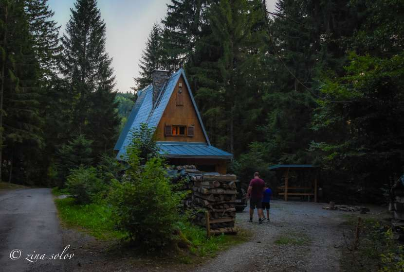
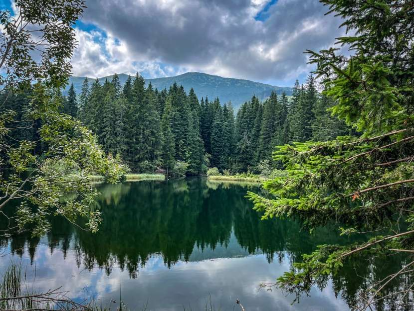
מדובר באגם שקט הנמצא בלב יער חביב, המון ברווזים שוחים באגם, שם הצוציקים אימצו להם אחד ולא הפסיקו לתצפת אחד על השני. טיילנו סביב האגם, נשנשנו פטל שצומח על השיחים. ויתרנו על הקפת האגם, למרות שקראתי שיש שם פארק חביב הצוציקים מיצו כי כבר היינו די רעבים.
חזרנו למתחם שליד הרכבל לאכול צהריים באחת מהמסעדות שם, היה סביר ושירות מהיר, ומשם עלינו שוב לפסגת החופוק. באמצע הדרך אזעקה, אופס מסתבר שהאפליקציה של פיקוד העורף עובדת גם אם מוגדרים אזורי עניין, נראה לי שהפחדנו כהוגן זוג פולנים שהיו איתנו ברכבל. כשעלינו לפסגה בפעם השניה, הערפל לגמרי התפזר (וגם האנשים), ויצאנו לחוות את השביל הפנורמי סביב החופוק, מדובר בשביל בעל 8 תחנות הסבר, בכל תחנה יש תצפית והסבר כלשהו, ממליצה לא להתעצל ולהגיע לתחנה 7, שטיפה מרוחקת יותר אבל יש שם נקודת צילום מהממת. לאחר שמיצינו את הפסגה ירדנו חזרה לתחנה שלנו קרופובה.
בהרבה מדינות מזרח אירופה יש אטרקציה של תלת אופן שניתן לרדת איתו מההר, אז גם בתחנת קוסודרבינה יש תלת אופן שאיתו ניתן לרדת עד תחנת קרופובה, אבל, רק לילדים מגיל 12, כשהם יכולים לדווש לבד על התלת אופן. ילדים קטנים יותר לא מורשים לשבת על ההורים (לא בכל המקומות זה ככה ויש מקומות שמאפשרים- כי הירידה פחות אתגרית ופחות סיכון להתהפך).
כבר ברכבל צוציק החל לפנטז שוב על סאפ באגם, לכן כשחזרנו לבקתה פרגנתי לחצי מנוחה ולקחתי את הצוציקים איתי לאגם. הפעם האגם היה ריק! גם כי ראשון בערב וסוף השבוע נגמר וגם כי היום רק 20 מעלות ולא 32. שכרנו שוב סאפ אבל המים היו כלכך קרים שפשוט אי אפשר היה לשחות. אחרי 2 קפיצות למים פיצקה ויתרה ונשארה להתחמם על החוף בעוד צוציק משיט אותי ברחבי האגם בעוד שיני נוקשות. אחרי 40 דקות אמרתי מספיק, הפכתי לשלגון! וחזרנו לבקתה ללילה אחרון במקום המקסים הזה.
כמה תובנות על הבקתה: המיקום שלה בתוך היער וממש בסמוך לאגם היה מושלם, זה נתן וייב של חופש וקצת הזכיר לי סיפורים של ההורים על הדאצ׳ה ברוסיה שהיו נוסעים לבית נופש (בקתת עץ) איפשהו בכפר ליד יער ואגם. הבקתה כאמור מאובזרת למופת אם כי המדרגות לקומה השניה מפחידות ממש (כמו מדרגות לעליית גג). החסרון היחיד לדעתי זה המיקום שלה מבחינת קרבה לאטרקציות, הייתי נשארת שם עוד כמה ימים בכיף, אבל כל אטרקציה היתה דורשת מינימום של שעה שעה וחצי נסיעה רק לאיזור ליפטובסקי מיקולאש או רוז׳נברוק וזה פחות נוח בטיול כוכב. אבל אם מחפשים כמה ימים של רוגע ביער הבקתה פשוט מושלמת, ויש גם מסלולים יפים ביער שלא הספקנו לעשות.
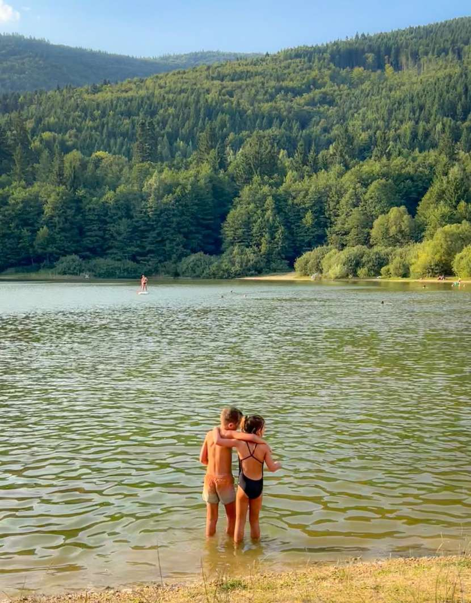
18.8.25- ההמתנה לפארק החבלים
עוד יום יפה מקדם את פנינו, ארוחת בוקר אחרונה במרפסת היפה שלנו עם הנוף ליער ואנחנו עוזבים את הבקתה המשגעת שלנו ונוסעים לעמק הרבובו hrabovo.
העצירה הראשונה שלנו הייתה בכפר ולקולינץ Vlkolínec, אליו הגענו אחרי שעה ורבע נסיעה. מדובר בכפר היסטורי המשמר את הבתים וסגנון החיים של פעם, שהוכר גם ע״י אונסק״ו ככפר לשימור. הכניסה בתשלום (לא זוכרת אם 5 או 10 יורו) וכוללת גם את החניה. הילדים קיבלו דפי משימה, בהם היינו צריכים לעבור בין כמה מקומות בכפר בכדי לענות על השאלות, הם מאוד נהנו מהאתגר. הכפר עצמו חביב, והנוף משגע!
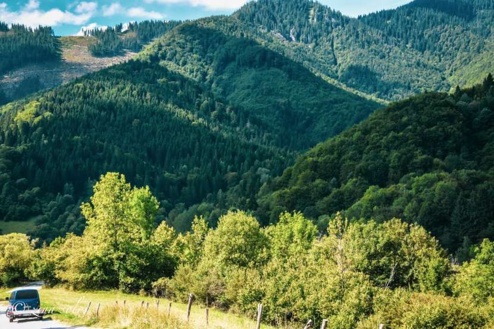
ניתן להגיע לכפר גם בהליכה של 45 דקות, אם עולים ברכבל מלינו ברדו שבהרבובו, אבל מפאת חוסר זמן בחרנו להגיע לכפר ברכב, בדיעבד נראה שדווקא מסלול ההליכה מאוד חביב ובנוף מהמם.
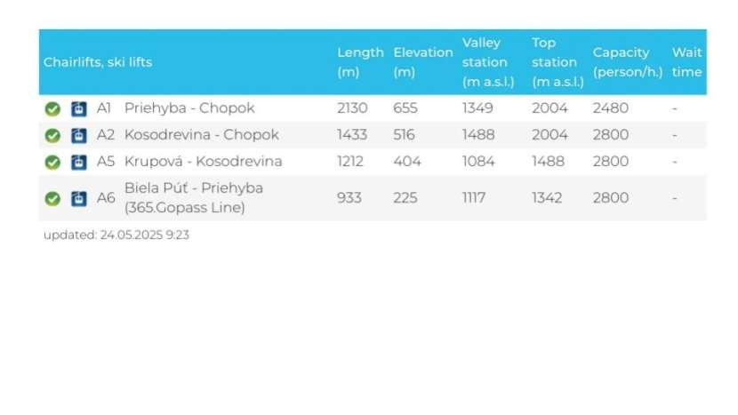
לאחר מכן נסענו לפארק החבלים טרזניה שבהרבובו, אך הוא היה עמוס מאוד ונאמר לנו שאין כרגע רתמות לילדים. השעה היתה כבר כמעט אחת בצהריים והיינו כבר רעבים, בנוסף מהתכתבות עם בעל הדירה שלנו, שהזמנו ממש על האגם בהרבובו, היא תהיה מוכנה רק אחרי השעה שתיים מה שמשאיר לנו מספיק זמן לאכול ומיד להגיע ולקבל את הדירה (עליה אפרט עוד מעט).
נסענו כעשר דקות לחוות ומסעדת הגבינות Salaš Krajinka שהומלצה רבות. מדובר בחווה, יש במקום מאפיה ומסעדה, את המאפייה לא ניסינו ודווקא חבל כי יש ביקורות מצויינות על המאפים שלהם. המסעדה היתה בסדר, מלאה מאוד ואין אפשרות להזמין מקום רק לחכות, אז אחרי 10 דק׳ המתנה (בזמן הזה החצי והצוציקים בחנו מה יש בחוה ואני חיכיתי) התיישבנו בשולחן. השירות מאוד איטי, האוכל סביר, לא התלהבנו בכלל, המלצרית שלנו לא ידעה מילה באנגלית, בכלל שמתי לב שהצעירים יודעים אנגלית מצויין והמבוגרים יותר (30 צפונה כמעט ולא יודעים).
בדרכנו חזרה עצרנו לקניות בסניף הענק של רשת tesco שנמצא ממש בפניה לכיוון הרבובו, ומשם ישירות לדירה שלנו ליומיים הקרובים: Vila Olivia- Hrabovo, מדובר בדירה בבניין עם דירות נופש להשכרה על גדות האגם, דירה גדולה מרווחת ומאובזרת בכל טוב. נוף יפה אם כי יותר לכיוון החניה ופחות לאגם, חניה תת קרקעית. החסרון היחיד הוא שהבעלים לא יודעים מילה באנגלית אז נעזרנו רבות בטרנסלייט או בהתכתבות דרך אפליקציית בוקינג. בסה״כ אני מאוד ממליצה, הדירה מאוד נוחה ומאובזרת (כולל מכונת כביסה) קרובה לאטרקציות סביב האגם ויש לא מעט, בדיעבד הייתי לוקחת לפחות עוד יום אחת באיזור הזה כי הרגשתי שלא מיצינו
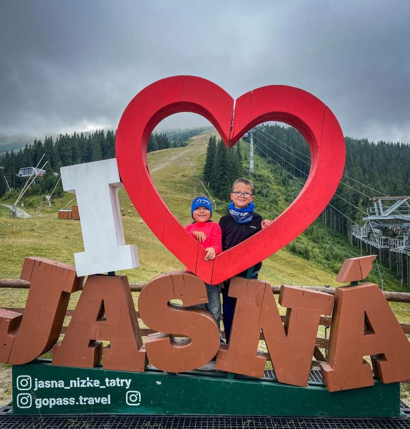
בסביבות חמש בערב הלכנו שוב לפארק החבלים, הפעם ברגל מהדירה, הליכה קצרה לאורך האגם, רק כדי לגלות ששוב אין רתמות פנויות (המקום נסגר בשבע כן?!). לכן במקום הפארק הצוציקים הלכו לשחות באגם ועשו זורבינג (מכניסים אותם לכדור ענקי ומגלגלים אותו באגם) התענוג עלה לנו 20 יורו ל10 דקות. אחרי הזורבינג הם הלכו לקפוץ למים שהיו פשוט קפואים, אבל להם זה לא הפריע. רק בשש בערב (שעה לפני הסגירה) התפנו רתמות לילדים בפארק החבלים טרזניה, המקום די קטן ויש רק 2 מסלולים לפי גובה (מעל 150 ס״מ ומתחת) המסלול עבור אלה שמתחת ל-150 ממש קליל לילדים שמנוסים בפארק חבלים, הילדודס נהנו אבל לא הייתי נוסעת במיוחד בשביל זה, חשבנו שהפארק יהיה ברמה יותר גבוהה לאור כל ההמלצות עליו בכל מקום. מזל שזה היה קרוב לדירה ולא בזבזנו סתם יום בנסיון להגיע אליו. את הערב סיימנו בפיצה טעימה שהכנו בתנור ובהתארגנות למסלול למחר.
עוד כמה פרטים על איזור הרבובו: חוץ מהאגם ופארק החלבים במקום פועל רכבל מלינו ברדו, אליו מגיעים בעיקר לרכיבת אופניים, במקום יש המון מסלולים והמון מקומות להשכיר אופניים. ניתן גם להשכיר קורקינטים או תלת אופן ולרדת מההר אבל גם כאן כתבו באתר רק מגיל 12 ולא היה לנו זמן לברר איתם אם ניתן לילדים קטנים לרכב עם ההורים. בנוסף בפארק החבלים טרזניה יש גם אומגה מעל האגם- לוקחים ציוד מהמשרד הראשי והולכים עם המדריך לצד השני, אנחנו לא עשינו כי יש הגבלת משקל לילדים רק מעל 40 קילו (אחרת פשוט יתקעו וחבל). לא רחוק משם יש גם מסלול הליכה לא קשה על גשרוני עץ וסולמות שלא הספקנו לעשות, זו הנקודה בגוגל Hrabovské vodopády.
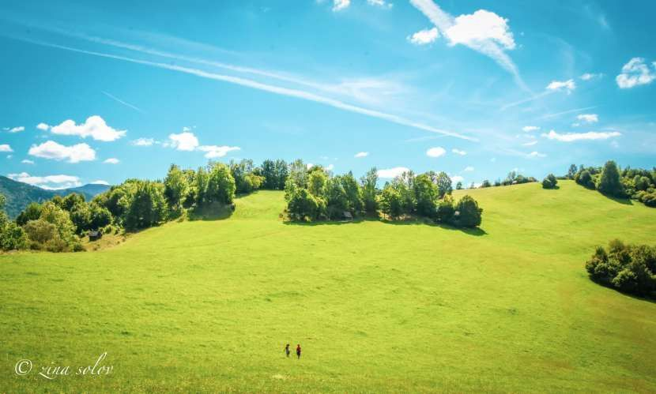
19.8.25- מסלול אגמי הרוהאץ
התלבטתי רבות אם כדאי לנו בכלל לעשות את המסלול, מדובר במסלול מאתגר, 13 ק״מ בעליה לא פשוטה, בשביל להגיע לאגמים, שבטח יקח לנו 5-6 שעות בכיף. בסוף כולנו החלטנו לנסות אותו, ובכדי שיהיה לנו צ׳ופר אחרי המסלול, תכננתי לסיים את היום בפארק מים לאתנחתא.
את כל ההכנות למסלול עשינו ערב לפני, הכננו סנדוויצים, נשנושים (והרבה לילדים) כך שלאחר השכמה מוקדמת בשבע בבוקר, ונשנוש מהיר לילדים יצאנו לדרך.
המסלול מתחיל בחניון ספלאנה- Car park Spalena שהנסיעה אליו ארכה כשעה, החניה עולה 8 יורו. במקום יש גם רכבל פתוח שעולה להרים למעלה. טיפ חשוב, שימו לב שבעונת הקיץ יוצאת מהחניון רכבת המגיעה לבקתה הראשונה במסלול (ממנה ניתן לעלות לאגמים ולחזור במסלול קווי ולא מעגלי, מה שיכול לפשט מעט את המסלול) מצרפת את האתר עם לוח הזמנים של הרכבת: https://rohacskyvlacik.sk/
אנחנו לא רצינו לעשות מסלול קווי, אלא את המסלול המלא והמעגלי, מהחניה יוצא שביל ירוק אל תוך היער, אשר מתחבר לכביש סלול (שביל אדום ירוק) זה הכביש בו גם עוברת הרכבת. בכביש הזה צעדנו כחצי שעה בעליה קלה עד שהגענו לפיצול שבילים: ימינה בשביל כחול צהוב או להמשיך ישר בשביל האדום ירוק. אם תמשיכו ישר תגיעו לבקתה Ťatliakova cottage שאליה מגיעה גם הרכבת ותתחילו את המסלול משם, כאשר מדובר בעליה עד לאגמים, כאמור אם קשה, ניתן ללכת לאגם הראשון או לכולם ואז לחזור חזרה לבקתה, או ללכת בשביל המעגלי הארוך.
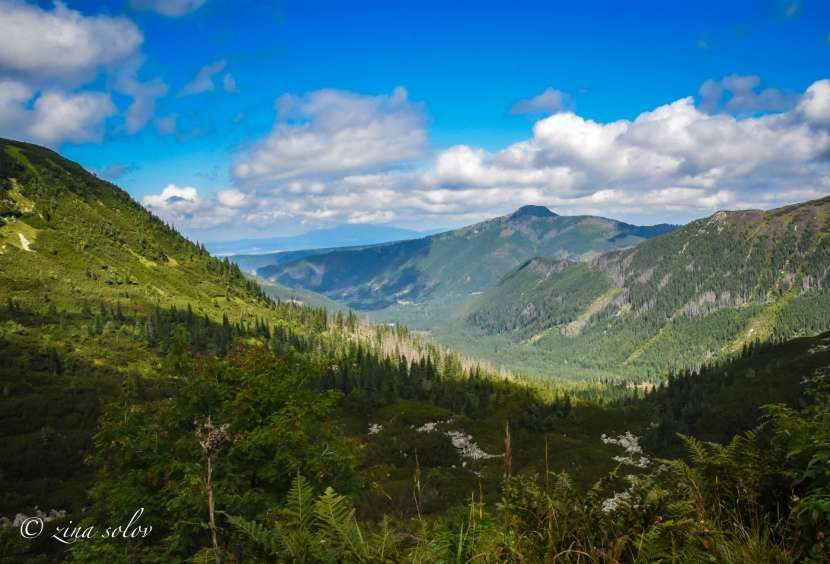
אנחנו כאמור החלטנו לעשות את המסלול המלא, קראתי שעדיף דווקא לעשות אותו הפוך- לא מהצד של הבקתה אלא לפנות ימינה ולהגיע בעליה לאגמים ומשם הדרך היא בירידה, וכך עשינו. לאחר כמה דקות הליכה השביל נכנס לתוך היער, ואנחנו מתחילים לצעוד בשביל אבנים צר בעליה מתונה אך מתמדת, לאחר כחצי שעה של עליה הגענו לפניה למפל, מאוד מומלץ ללכת לראות את המפל (סטיה קלה של 5 דקות מהשביל) ולנצל את העצירה גם למנוחה ונשנוש. אחרי ששבענו, המשכנו בעליה, הפעם תלולה יותר עד שמגיעים לקרחת יער חביבה עם שולחן פיקניק ונוף מהמם, שם יש פיצול נוסף (השביל הצהוב והכחול מתפצלים). התיישבנו לנוח טיפה ולנשנש עוד משהו קטן, עד כה צעדנו שעתיים בעליה, לא נוראית כלכך והיה בסדר גמור, ואז החצי מסתכל מעלה על ההרים שמולנו ומזהה שביל שמוביל ממש למעלה למעלה, כן, זה בדיוק ההמשך של השביל שלנו, כך שלעליות הקשות עוד לא הגענו אפילו. המשכנו עם השביל הכחול, בהתחלה בצעידה מישורית נעימה, עד שהגענו לאגמון חביב, עצירה לצילום וממשיכים. אחרי האגמון מתחילה העליה האכזרית למעלה, כן זו עליה קשה, מתישה, וארוכה והקטע הכי קשוח במסלול. נראה לי לקח לנו בין שעה לשעה וחצי רק לעלות אותה, עם המון עצירות למנוחה ולהסדיר נשימה, מצד שני הצוציקים בני השבע וחצי עשו את זה בלי לקטר, עם המון ממתקים לנשנוש.
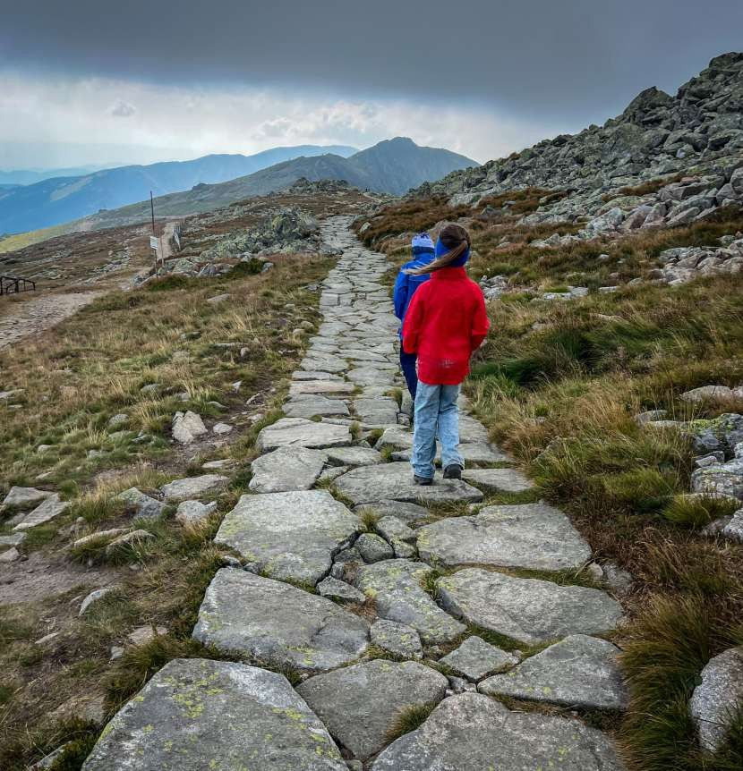
לאחר העליה האכזרית מגיע התגמול- האגם הראשון והוא משגע ביופיו, תפסנו לנו פינה קטנה, והוצאנו את ארוחת הצהריים המאולתרת שלנו. עד כה צעדנו כ-4 שעות והשעה כבר 12 בצהריים, אין סיכוי שנסיים את המסלול ב-5 שעות אולי שש או שבע. בזמן שאכלנו מלא ברווזים רעבים התקבצו סביבנו, אחרכך עשינו סיבוב עם הצוציקים לראות את האגם במלוא תפארתו. כשנחנו מספיק, המשכנו בשביל הירוק שעובר בכל 4 האגמים. היתרון בכיוון הזה שמגיעים מלמעלה ורואים את האגמים תחתיכם, הנוף פשוט עוצר נשימה, אבל, אם חשבתם שהירידה קלה יותר, טעות! השביל כולו בנוי מבולדרים ואבנים כך שגם הירידה אינה קלה כלל וכלל, והיא גם מאוד אבל מאוד ארוכה. אני חושבת שדווקא כרן בירידה העייפות הכריעה אותנו כך שבקושי נהננו מהאגמים ורק רצינו כבר לרדת למטה. למי שבא מהצד השני, זה לא יותר קל! העליה לאגם הראשון (או האחרון שלנו) היא קשה!
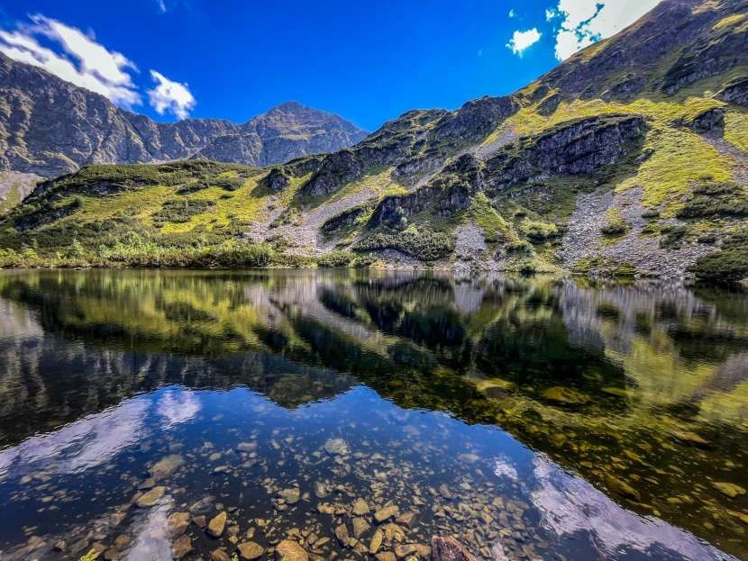

איזה מזל שקראתי וידעתי שיש את הרכבת הזו היוצאת מהבקתה, זו פשוט הצלה! וכך כשהגענו לבקתה, אחרי מסע של 7 שעות, לא היה לנו אפילו כוח להכנס לבקתה ולקנות משהו, כל מה שהילדים רצו וגם אנחנו היה לתפוס מקום ברכבת ולחזור לחניה. לא ניתן לשריין מראש כרטיס לרכבת, היא על בסיס מקום פנוי, הגעתם, תתיישבו תשלמו ותסעו, אין מקום תחכו עוד שעה לרכבת הבאה או תצעדו את 5 הקמ הנותרים בשביל האדום ירוק הסלול חזרה לחניה.
לסיכום המסלול, לקח לנו 7 שעות לעשות את המסלול המלא, התחלנו בתשע בבוקר וסיימנו ב-4 אחר הצהריים. סה״כ צעדנו 13 ק״מ, 700 מטר עליה. רק ההליכה עד האגם הראשון לקחה לנו כ-4 וחצי שעות, וההליכה לאורך האגמים והירידה ועד לבקתה לקח לנו כשעתיים וחצי כשהירידה ארוכה ולא קלה כלל (לא פחות קשה מהעליה).
כשהגענו לחנייה יש שם שירותים מסודרים, וגם קפיטריה, לנו כאמור לא נשאר כוח לכלום ורק רצינו להגיע לפינוק שלנו- פארק המים בשנובה. לפארק הגענו בשעה חמש כשהוא נסגר בשעה שמונה בערב, בדיעבד זה לא מפסיק זמן ועדיף היה לעשות אותו ביום אחר ולהשקיע בו יותר זמן, מצד שני אחרי הליכה כלכך ארוכה בריכה חמה היא בדיוק מה שהיינו צריכים! וגם כי לא הסתדר לנו בשום יום אחר להגיע לפארק המים.
קנינו כרטיס דרך ה-go pass שהוזיל לנו בכ-15 יורו את הכניסה. פארק המים בשנובה הוא גם מלון וגם פארק מים, המקום גדול אבל לא ענק, יש שם בריכות פנימיות וחיצוניות וכן בריכות מינרלים בצבע חום. בזמן שהלכנו להזמין אוכל, הצוציקים כבר הלכו לנסות את המגלשות, עם כמויות אנרגיה שאין לי מושג מאיפה יש להם אחרי מסלול כלכך קשה. אחרי שכולנו אכלנו לשובע, אני והחצי הלכנו לטבול במים החומים ולתת מרגוע לשרירים הכואבים. הצוציקים התרוצצו במתחם שבחוץ ודגמו את המגלשות, הנהר העצל, מגלשות אבובים וכו. בשעה שבע התחילו לסגור את המגלשות שבחוץ ואנחנו נכנסנו פנימה לגלות עולם מים ענק, בריכת גלים ובריכת ילדים עם ספינת פיראטים ענקית שם בילינו עד הסגירה. יש עוד מתחם ענק בחוץ עם מגלשות גדולות לילדים גדולים יותר ועוד האזורים שאליהם לא הספקנו להגיע מפאת חוסר זמן.
יצאנו משם עם הסגירה בשעה שמונה ותוך חצי שעה הגענו לדירה, עייפים ומאוד מרוצים מיום מלא בחויות
20.8.25- מאלתרים
היום תכננתי לנסוע לטירת אורבה ומסלול נקיק קניון דיירי, אבל אחרי המסלול אתמול הוטל וטו על עוד מסלול היום ולכן ויתרנו על קניון דיירי, נצטרך נשאיר לפעם הבאה.
בגלל שהצוציקים הצטיינו במסלול אתמול, החלטנו לצ'פר אותם בטיול אופניים בעמק Čutkovo הנמצא עשר דקות נסיעה מעמק הרבובו. התארגנו ועשינו צ׳ק אאוט לדירה החביבה שלנו, אם יהיה לנו עוד לילות הייתי מוסיפה לפחות עוד לילה או שניים לאיזור הזה.
בכניסה לעמק צ׳וטקובו, נמצא פארק אוברובו- obrovo מדובר בפארק קטן לילדים עם כל מיני פעילויות, אנחנו לא היינו אבל שקראתי שמומלץ עם ילדים קטנים. ממש ליד הפארק יש חנות השכרת אופניים וקורקינטים. שכרנו 3 אופני ebike בעלות של 18 יורו לשעתיים ואופניים רגילות לפיקצה שהיתה קטנה מידי בגובה לebike אבל קיבלו כבל לחבר את האופניים שלה אלינו, בהתחלה היה הרבה מאוד בכי אבל בסוף הילדה קלטה שהכי כיף להיות קשורה לאופניים של אבא כך שהיא הכי נהנתה.
במקום יש שפע מסלולים החל מהקל ביותר של 10 קמ ועד למסלולים של 50-60 קמ. אני כמובן רוכבת אופניים מהוללת שכמותי, אז כמובן שבחרנו את המסלול הכי קל שאפשר, 10 ק״מ בעמק, ללא עליות קשות, ללא מצוקים שאני יכולה ליפול מהם.למאותגרי האופניים כמוני ה-ebike הוא פתרון מצויין, זה ממש מקל ועוזר אחרת אין סיכוי שהייתי שורדת אפילו 10 קמ. המסלול יפיפה והשביל קל ונוח (גם למאותגרות אופניים כמוני), וכך בלי ששמנו לב גמענו את המסלול ופתאום התחילו עליות, בהתחלה עלינו בכיף אבל כשמצאתי את עצמי בשיפוע כזה שאני אפילו לא יכולה להתחיל נסיעה מבלי להידרדר, זה היה האות לחזור בחזרה. בדיעבד הבנו שסיימנו את הקטע הקל במסלול ונכנסנו להתחלה של מסלול מאתגר יותר.
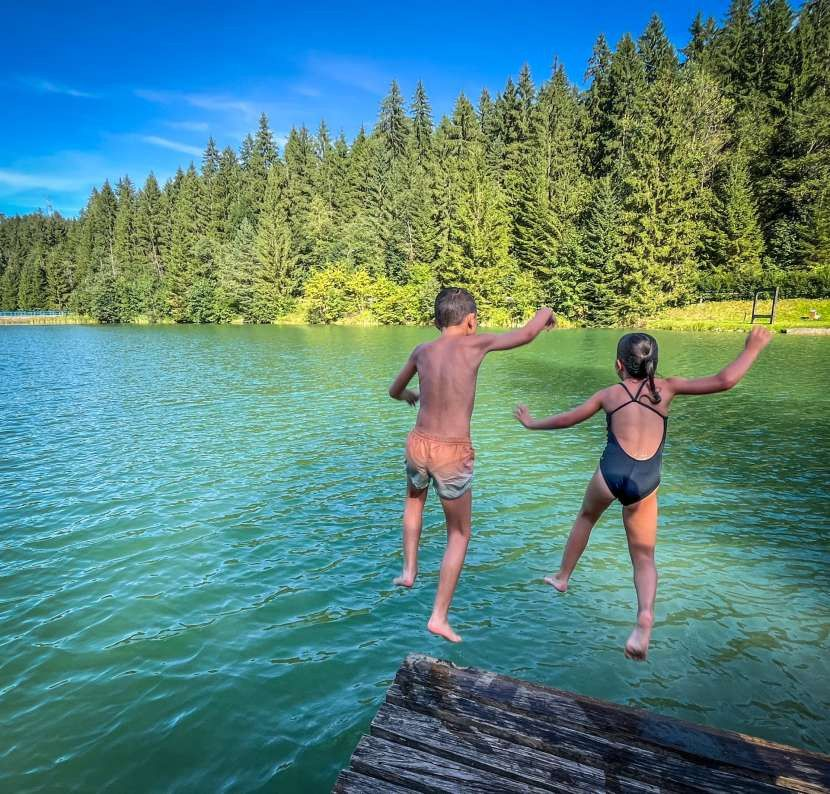
לאחר שהחזרנו את האופניים, טיילנו מעט במתחם, הילדים לא ממש רצו להיכנס לפארק אוברובו, והעדיפו לטייל במתחם ולראות פרות ועיזים וגם פרפרים בשפע. השעה היתה 12, עדיין מוקדם מידי לארוחת צהריים לכן עצרנו לקפה במסעדה Koliba u Dobrého pastiera, היא נראית מהמם והומה מקומיים. בדיעבד היינו צריכים לאכול כאן, אבל כאמור עדיין לא היינו כל כך רעבים.
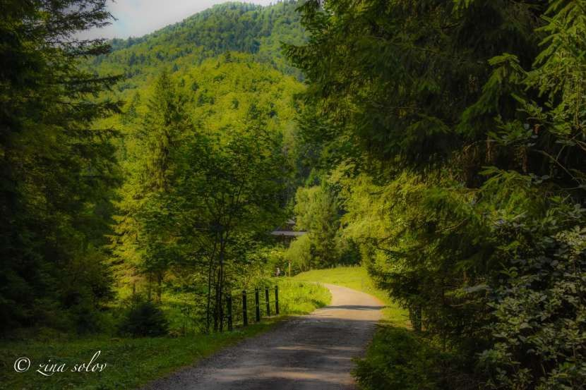
מכאן תכננתי לנסוע לטירת אורבה, אבל היה יום יפה וחמים כלכך אז החלטנו לוותר על הטירה ולנסוע לשחות באגם מארה.
הגענו לחוף המפורסם MARA CAMPING / ATC Liptovský Trnovec, משלמים דמי כניסה (לא זולים כלל אם אני לא טועה יצא לנו 14 יורו), אבל קיוויתי שזה חוף מסודר עם אופציות לאכול ופינה נעימה לשבת, וכאן ממש התאכזבנו. גילינו חוף ברמה ירודה מחופי הכנרת, אין באמת מקומות מסודרים לשבת, המסעדות הן כולן ג׳אנק אחד גדול. המים היו ממש קפואים כך שהצוציקים שחו טיפה ויצאו. הם נורא רצו סירת פדלים עם מגלשה למים אז לקחנו אחת לי ולצוציקים, החצי נשאר להשתזף, גם זה לא היה זול, 20 יורו לעשה. אני והצוציק פידלנו, אחר כך שניהם התגלשו קצת למים אבל מהר מאוד אמרו שקר מידי.
לקראת שלוש כבר היינו ממש רעבים ואכלנו זבל של אוכל באחת המסעדות שם (ממש הבתאסתי שלא אכלנו בקוליבה). בדיעבד היום הזה היה פחות מוצלח, ככה זה כשמשנים תוכניות בספונטניות כבר עדיף היה ללכת לטירת אורבה כמו שתכננתי במקור. ויתרנו על סיבוב בליפטובסקי מיקולאש ונסענו להצטיידות בסניף טסקו tesco מצויין בעיר לקראת הדירה הבאה שלנו והמעבר לטטרה הגבוהים.
נסיעה של כשעה בכביש מהיר הביא אותנו לנופים המרשימים של הרי הטטרה הגבוהים ולדירה שלנו לחמשת הימים הבאים- VILA Detvan שבעיירה Stará Lesná.
מדובר בבית נופש בשכונה שכל הבתים בה נראים אותו דבר ונראה שנבנו למטרות נופש. הבית עצמו מהמם, מעוצב בטוב טעם, דשא ירוק סביב, פינת מנגל, טרמפולינה, חדרים ענקיים, הילדודס אפילו זכו לישון במיטה זוגית לכל אחד מהם, מושלם!
את היום סיימנו בעל האש איכותי על רקע השקיעה בהרי הטטרה. זה חופש

21.8.25- הסופה שלא היתה
קמנו לבוקר אביך, היום לפי התחזית, צפויה סערה בשעות הבוקר המאוחרות ועד למחרת בשעות הצהריים. בהתחלה תכננתי לנסוע לאגם שטראבסקה (Strbske Pleso) ולעשות את המסלול לאגם פופורד, אולם לאור התחזית ולאחר התייעצות גם עם צ׳אט gpt שנורא הפחיד אותנו להיתקע בחוץ באמצע הטבע בעת סערה, החלטנו על מסלול קליל יותר ולקחנו את הרכבל לאגם סקלאנטה. הרכבל לאגם סקלאנטה יוצא מהעיירה Tatranská Lomnica, עיירת סקי חמודה במרחק 10 דקות נסיעה מהעיירה שלנו.
את הכרטיסים הזמנתי דרך go pass ובגלל שהצטבר לנו קצת cash back יצא טיפה יותר זול אם כי עדיין די יקר. החניה בסמוך לרכבל עולה 15 יורו ליום, אז אם תמצאו מקום אחר זול יותר הרווחתם. העלייה לאגם היא בשני רכבלים סגורים. נאגם סקלנטה יש מספר אפשרויות לטייל באיזור: 1. להמשיך לפסגת לומינסקי שטיט, הפסגה הגבוה באיזור, רכבל לא זול בכלל וצריך להרשם מראש. 2. רכבל כסאות פתוח ל״כמעט״ פסגת לומינסקי שטיט. 3. להקיף את האגם ולטייל בסביבה 4. להמשיך בשביל לכיוון הרבינוק (מסלול בירידה אבל על גבי בולדרים) ושם לרדת ברכבל ולחזור ברכבתֿ או מונית חזרה. במקרה כזה מוכרים כרטיס משולב לרכבל ולירידה בהרבינוק שנקרא Tatranská magistrála.כאמור במקרה שלנו, ויתרנו גם על ההליכה להרבינוק מאותה הסיבה שחששנו להיתקע בסערה.
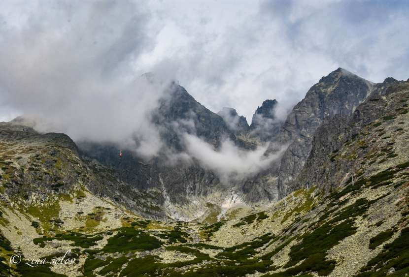
עלינו לאגם סקלאנטה, רק כדי לגלות שאין אגם בכלל, הוא התייבש לגמרי (אולי יש שלולית קטנה שבקושי ראינו). לאור הנוף הלוקה בחסר לא הייתה זרימה על הקפת האגם שלא קיים, לכן נכנסנו פנימה לשתות שוקו חם ועוגת תות עם קצפת. אחר כך, הילדים נהנו מפארק השעשועים הקטנטן שבמקום. מאגם סקלאנטה ירדנו לתחנת הביניים ומשם ניתן לרדת בתלת אופן עד לרכבל התחתון. כמובן שהחלטנו מיד לרדת בתלת אופן, בניגוד למקומות אחרים כאן מאפשרים לילדים שמתחת לגיל 12 שלא יכולים לנהוג לבד, לשבת על ההורים. התענוג עולה 15 יורו לתלת אופן. התיישבנו על הכלים, קיבלנו קסדות והסבר על המסלול והבלמים. מתחילים את הירידה בשביל סלול ונוח לנסיעה, צוברים תנופה במהירות רבה, יש כמובן תמרורי אזהרה והקטע האחרון של המסלול הוא כביש שטח, חוויה אדירה!
משם הלכנו לטייל בעיירה, בדרך, להפתעתינו הרבה, ראינו אייל מטייל להנאתו ומלחך עשב. הגענו לפארק רילקס Relax Park Jazierko, מדובר בפארק מקסים לילדים, בפארק יש מסלול חבלים, אומגה, קורקינטים להשכרה, סירות פדאלים באגם וכמובן מסעדה ובירה! מזג האוויר התקדר אבל זה לא הפריע לנו בשלב זה. אני והחצי התיישבנו לבירה בעוד הילדודס החליטו לנסות את המיני גולף. אחר כך פיקצה שכנעה אותי לעשות איתה את מסלול החבלים, וכמובן עם המזל שלנו, איך שאני והיא עלינו לתחילת המסלול, התחיל הגשם. למזלינו בשלב זה רק טפטוף קליל. המסלול היה מאוד גבוה ודי מאתגר, שהסתיים באומגה מעל האגם (שפיצקה ויתרה עליה פשוט כי היא היתה נתקעת בגלל משקל הנוצה שלה). כשסיימנו את המסלול, נשארנו במסעדה ונשנשנו צהריים, הגשם עדיין טפטף אך לא חזק מידי. בכל זאת די מיצינו את האזור וחזרנו לדירה למנוחה, עם הזמן הגשם התחזק, אבל הסערה המטורפת שהבטיחו לנו, לא היתה כלל. בדיעבד עדיף היה להמשיך בתוכנית המקורית ולעשות את המסלול לאגם פופרד, למה? כי בסוף לא הצלחנו לעשות אותו לצערי הרב
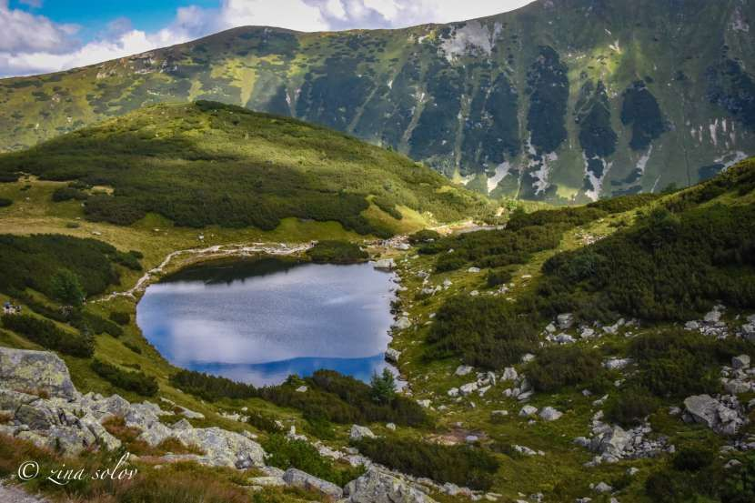
.בערב אחרי שאני כבר התחלתי לאבד את זה, יצאתי עם פיצקה לסיבוב בעיירה, בזמן שהבנים הכינו ארוחת על האש. השכונה נמצאת רחוק יותר מהעיירה עצמה וחבל מאוד שאין איזשהו שביל בטוח שאפשר לטייל כי מסביב לשכונה יש רק כביש מהיר. בכל זאת הסתובבנו קצת סביב הבתים המקסימים, וסיימנו את היום בארוחת על האש מצויינת!
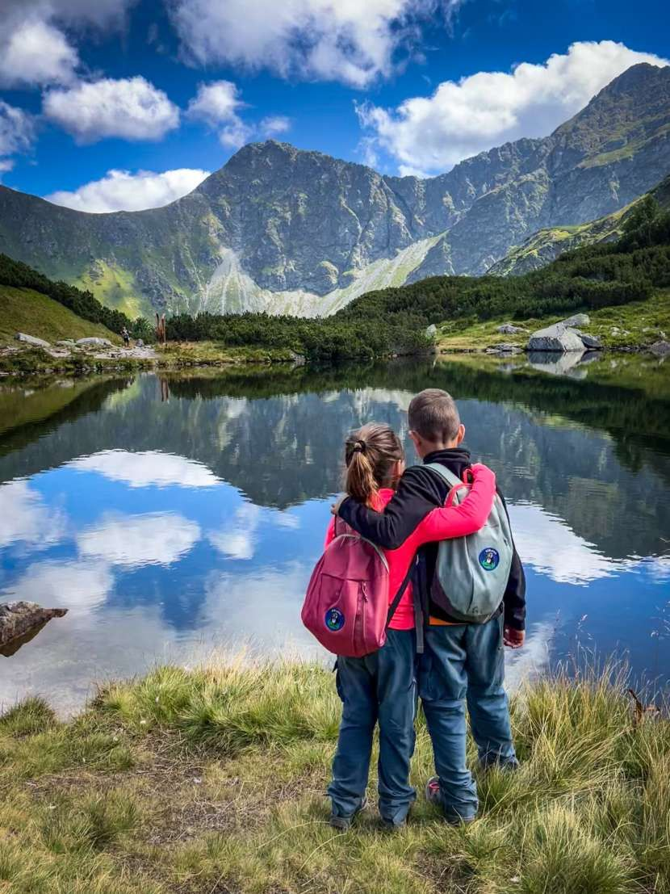
22.8.25- גשם וילדה צולעת
התעוררנו לבוקר גשום שלפי התחזית אמור לסתיים ב-11. כאמור סערת הברקים שהבטיחו לנו אתמול לא היתה ובמקום נמר קיבלנו חתלתול. אבל פיקצה שלנו קמה שוב עם רגל תפוסה, צולעת וכמעט ולא יכולה ללכת. לקחנו את הבוקר באיטיות, בהמתנה שהגשם יגמר ובביצוע מתיחות לרגל של פיצקה.
בסופו של דבר החלטנו לעשות את מסלול ההרבינוק שהוא קל יחסית (3 ק״מ), ולקראת השעה עשר שנראה שהגשם נרגע נסענו לעיירה סטארי סמוקוביץ׳ שממנה יוצאת הרכבת לתחנת הרבינוק. הרכבת יוצאת כל חצי שעה והכרטיס הפעם זול משמעותית מהכרטיסים לרכבל (גם דרך האפליקציה). כשעלינו לתחנת הרבינוק הגשם פסק, אבל בכדי להקל על פיצקה ישר עצרנו בקפיטריה שבמקום, הפעם לא היה להם שוקו חם, למרות היום הסגרירי והגשום, המוכרת עוד הסתכלה עלי עקום כששאלתי ואמרה שרק בחורף יש שוקו חם. לא יודעת איפה יהא חיה אבל היום לגמרי עונה להגדרה של יום סתווי לפחות! הסתפקנו בעוגה, לא טעימה בכלל ויצאנו לדרך.
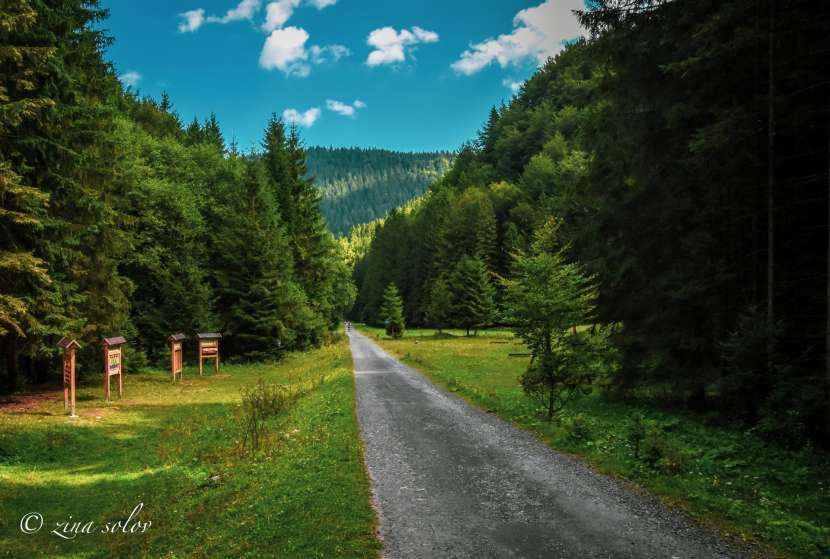
התחלנו בשביל האדום, העובר התוך היער כשמהצד השני נשקף הנוף של העמק, הגשם פסק והאוויר ממש רענן. בדרך יש מלא שיחי פטל, כמובן שקטפנו שפע מהם ונשנשנו תוך כדי ההליכה. בפיצול השבילים עוברים לשביל הירוק העובר בסמוך למפלים, שהם יפים מאוד אם כי לא מרשימים כלכך למי שכבר ראה מפל או שניים בחייו, אבל המסלול הוא בעיקר הטיול בטבע, מי שמגיע רק בשביל המפלים די יתאכזב לדעתי האישית. פיצקה סיימה את הסמלול בגבורה למרות שצלעה כל הדרך, כך שבמקום טיול של שעה שעתיים לקח לנו כמעט 4 שעות.
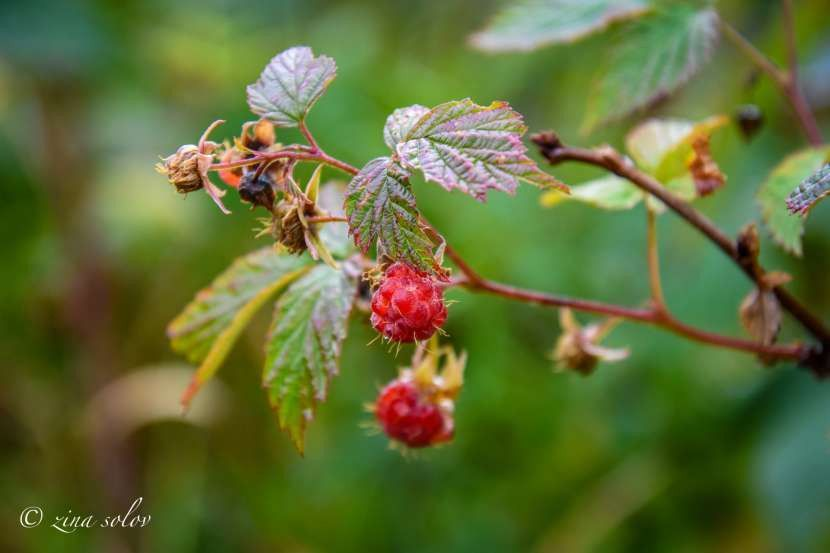
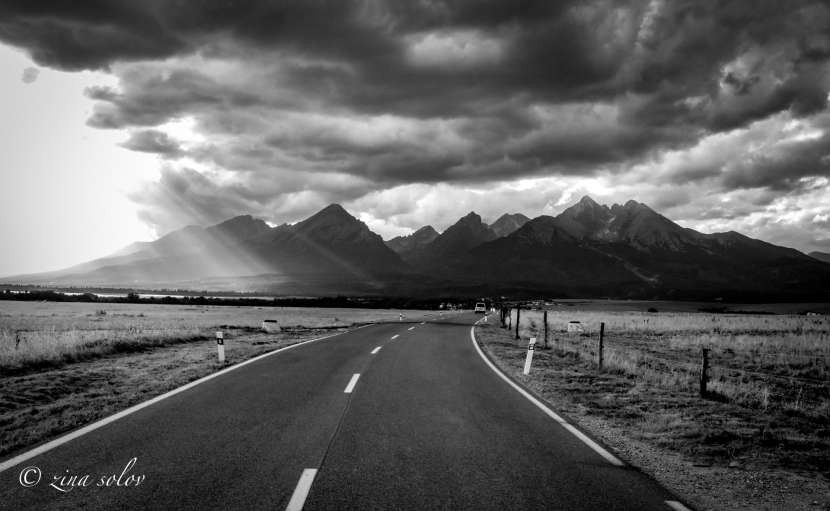
ירדנו לעיירה, השמש כבר יצאה והיום התחמם במהירות אם כי עדיין היתה רוח קרה. היינו רעבים אז מחיפוש מהיר בגוגל מצאתי מסעדת המבורגרים מאוד מומלצת (יותר נכון דוכן), החלטנו לנסות, ויצא שאכלנו את ההמבורגר הכי טעים בעולם! Pizza and Burger Vana מדובר בדוכן קטן עם מעט מקומות ישיבה שמכין את ההמבורגר המושלם!
פיצקה צולעת, אז עוד מסלול לא בא בחשבון, את הוילה מיצינו אתמול ולא בא לנו לבלות עוד אחר צהריים בוילה (זה רק החצי נגד שלושתינו שהטלנו וטו מיידי). לכן נסענו לפופרד, לפארק המים aqua city. שימו לב זה לא בשנובה או טטרלנדיה, הפארק הרבה יותר פשוט, אבל בגלל הצליעה של פיצקה נראה שמים חמים יעשו לה טוב. הכניסה עלתה לנו 90 יורו לארבעתינו (כאמור לא זול בכלל בסלובקיה). בפארק יש מגלשות מים בגדלים שונים, יש בריכות מקורות וחיצוניות, חמות וקרות, אמנם כמו שאמרתי זה לא בשנובה או טטרלנדיה אבל בהחלט מספק את הסחורה! בילינו במקום כ-3 שעות, בין מגלשות לבריכות פנים עד שמיצינו וחזרנו לדירה לארוחת ערב על האש כמיטב המסורת.
23.8.25- ראפטינג וצמרות עצים
יום קיץ קריר מצפה לנו היום עם רק 12 מעלות היום! קמנו יחסית מוקדם ויצאנו לדרך כי הזמנו לנו ראפטינג לשעה 10:00. נסיעה של כשעה מהעיירה שלנו לעיירה צ׳רנובי קלאסטור הנמצאת על נהר הדוניץ המהווה את הגבול בין סלובקיה ופולין וזה גם הכניסה לשמורת הטבע פניניי.
את הראפטינג הזמנו דרך מריה Rafting DUNAJEC (תשלום במזומן 90 יורו לארבעתינו). במקום יש חניה ממש מאחורי החנות, קיבלנו וסטים, קסדות חובה לילדים והצטרף אלינו מדריך, בחור חביב שנתן המון הסברים על האיזור:
הנהר כבר לא קופא בחורף, פעם אחרונה שקפא היה בשנות ה-90. הטמפרטורות בסביבה בחורף הן סביב מינוס 5-10 מעלות יש שלג אבל נדיר שיש ימים שהטמפרטורה צונחת למינוס 20.
אסור לשחות בנהר הדוניץ באיזור השמורה (פניני).
לפני כמה שנים נהרג מטייל שנפל מאחד הצוקים במקום
מי הנהר די רגועים והראפטינג לא מסוכן כלל, אפשר גם לעשות לבד ללא מדריך. יש מקומות שיש טיפה זרם מהיר וזה כיף אבל רוב הזמן השיט מאוד רגוע. הראפטינג נמשך כשעה שעה ורבע ואז מגיעים לנקודת הסיום. בכדי לחזור חזרה יש כמה אפשרויות: 1. הליכה של כ-10 קמ חזרה לאורך הגדה, ניתן גם לשכור אופניים ולחזור איתם. 2. אוטובוס.
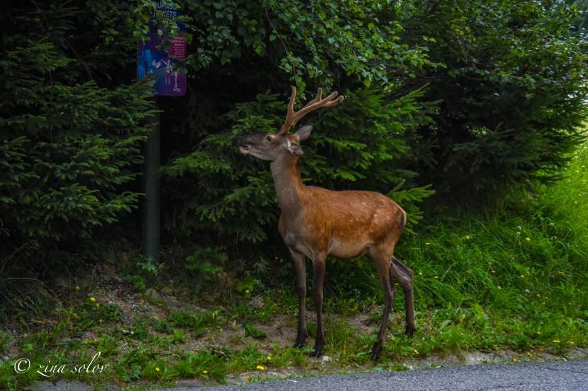
אם שכרתם אופניים או אתם רוצים לחזור באוטובוס צריך ללכת לעיירה הסמוכה כ800-900 מטר ושם נמצאות עמדות להשכרת האופניים ומשם גם יוצא האוטובוס לצ׳רנובי קלסטור.
פיקצה עדיין צולעת כך שאין סיכוי להליכה של 10 קמ או אופניים בשבילה (ובשבילי), אז התפצלנו, החצי והילד לקחו אופניים, אפשר לקחת כחבילה דרך מריה, זה מה שעשינו, אבל בדיעבד פחות ממליצים. אפשר להשכיר אופניים גם העיירה עצמה ואפילו באיכות טובה יותר מאלה שמקבלים כשמשכירים דרך מריה (לפחות זה מה שהחצי אמר אחרי שהמושב של האופניים התפרק לו במהלך הנסיעה). גם צוציק פחות אהב את המסלול היות והוא היה מאוד עמוס והיה להם קשה לרכב כי כל שניה כמעט ונתקעו בעוד רוכבים או הולכי רגל.
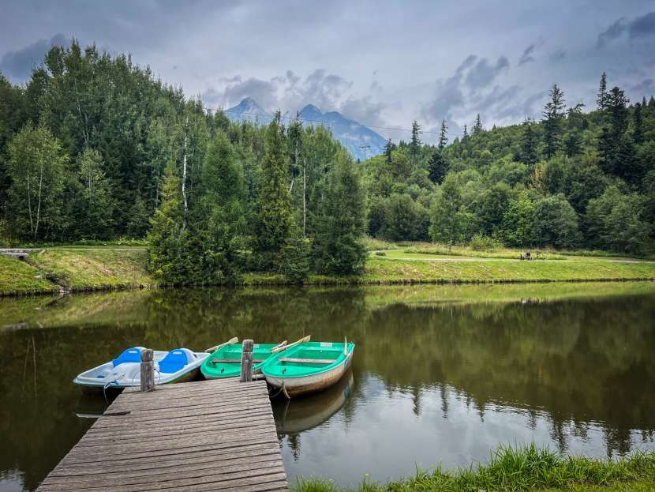
בנקודת הסיום הבנים הלכו מהר לעיירה לקחת את האופניים שלהם בזמן שאני ופיקצה דידינו בקצב שלה לעיירה. נפגשנו ממש בכניסה כשהבנים כבר היו על האופניים ואני הגעתי עם הילדה בשק קמח עלי.
העיירה די חמודה ויש שם שפע מסעדות חנויות, גן שעשועים ונחל חביב, לא היה לנו זמן להתעכב שם, קנינו בקיוסק את הכרטיס לאוטובוס שיוצא פעם בשעה, הספקנו לזה של 12, הכרטיס עולה 3 יורו למבוגר ו-2 יורו לילד. נסיעה של 20 דקות וחזרנו לצ׳רנובי קלאסטור, במהלך הנסיעה עברנו במקומות כלכך יפים כל שבטוח נחזור לשמורת פנייני לטייל בה ולא רק לראפטינג.
בזמן שחיכינו לבנים, חצינו את הגשר לפולין ושוטטנו קצת בשוק שם, רק אז קלטתי שאני עם אשראי ו-50 יורו מזומן אבל בפולין זה זלוטי, אז גם אם ממש ארצה לקנות מזכרת בשוק אין לי איך כי לא מקבלים אשראי. בסוף קניתי לפיקצה גלידה בקיוסק ודידינו חזרה לסלובקיה.
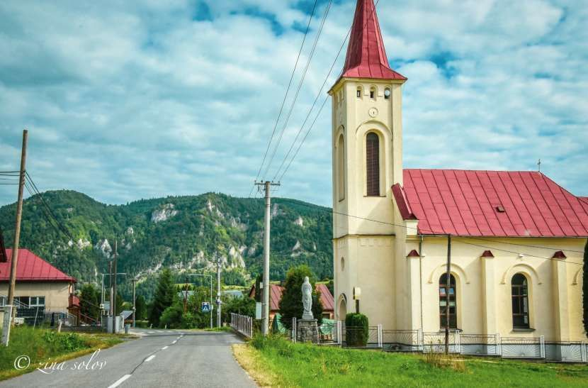
כשהבנים חזרו, החלטנו לנסוע לכפר זדיאר כדי לאכול במסעדה עם נוף יפה, נסיעה של 40 דקות דרך שבילי כפר וכפרים מקסימים עם המון פרות הרועות בצידי הדרך, והגענו חזרה לטטרה הגבוהים. עצרנו במסעדה Skicentrum Strednica, הצופה על נוף הרים משגע ביופיו, אבל כל כך קר בחוץ שאין מה לדבר אפילו על סיבוב במקום. לצערי המסעדה היתה ממש גרועה, השירות היה מזעזע, איטיים בטירוף, האוכל בינוני, אבל הנוף משגע. היה ממש קר כך שלא טיילנו סביב וחבל נראה שאפשר לטייל שם הרבה ולספוג את הנוף. משם המשכנו בנסיעה קצרה של 10 דקות לשביל צמרות העצים, זו כבר מסורת אצלינו שהתחילה עוד מאוסטריה, צ׳כיה ועכשיו גם סלובקיה. כדי להגיע לשביל יש לעלות ברכבל Bachledka שוב תענוג לא זול בכלל והפעם אין go pass. ניתן כמובן לעלות גם רגלית ולחסוך את עלות הרכבל, מה שלא אפשרי היום בגלל הרגל של פיצקה. פרט לשביל הצמרות יש במקום גם פארק שעשועים די מושקע וכמובן תלת אופן לרדת מההר, בקופה מטה ליד הרכבל ניתן לקנות כרטיס משולב. אנחנו בחרנו רק את הרכבל לצמרות העצים וכניסה למסלול כי באמת שהיה קר היום ואנחנו ממש לא היינו לבושים בהתאם אז לא רציתי להאריך יותר מידי את השהייה למעלה.
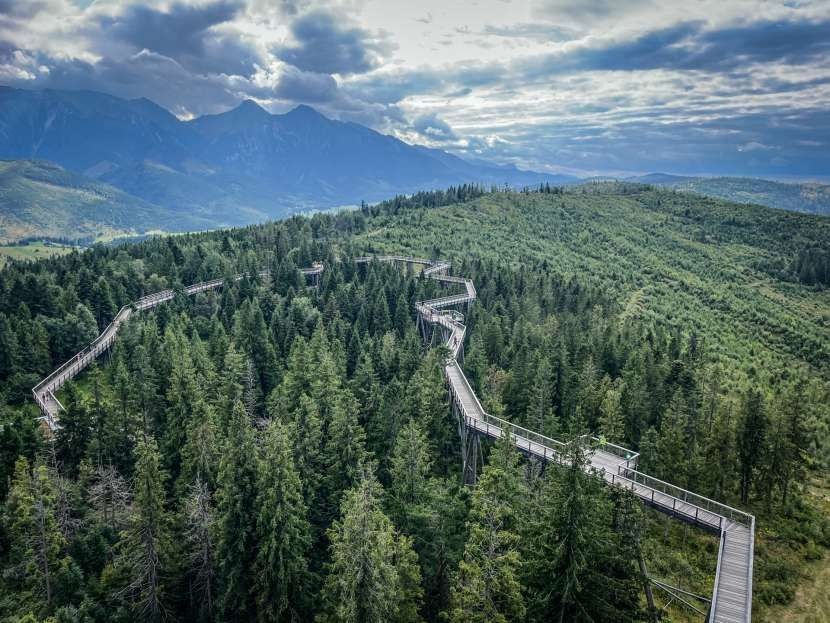
שביל צמרות העצים, בנוי מעל העצים ומוביל למגדל ספירלה, בדרך אליו מתרשמים מנוף יפה והמון מייצגים של קיימות. עולים למגדל הספירלה לתצפית משגעת, על פסגת המגדל יש טרמפולינה ענקית ושקופה, אני וצוציק היינו אמיצים לעמוד עליה, לא לבעלי פחד גבהים. כדי לרדת מהמגדל, ניתן להתגלש מטה מראש המגדל ועד לתחתיתו במגלשה, בעלות של 3 יורו (מקבלים אשראי).
בחזרה למטה כאמור ניתן לרדת גם פה בתלת אופן, אבל אנחנו ויתרנו פשוט כי היה קר מידי. כשירדנו מהרכבל קינחנו בקפה וגלידה מצויינת לצוציקים, וחזרנו לוילה שלנו ללילה אחרון.
24.8.25- שלושה אגמים וסנאי אחד
קמנו ליום יפה ושמשי אבל ממש ממש קר! כמה קר? 10 מעלות קר! לאחר שאכלנו וארזנו ונפרדנו מהבית המקסים שלנו, נסענו לאגם שטראבסקה, התחנה האחרונה שלנו בטטרה הגבוהים. כמה שלא התפללתי שהשריר של פיקצה ישתחרר והיא תוכל ללכת כמו שצריך, לא עזר,הילדה עדיין צולעת. בצער רב אני מבינה שלא נעשה את המסלול לאגם פופראד שנורא רציתי, וגם לא שום מסלול אחר בסביבה (כבר חשבתי על אגם יאמסקה המישורי והקל יותר), אפשרות נוספת של לעלות ברכבל סוליסקו נפסלה פשוט כי אין לנו בגדים חמים לפסגה, אם למטה 10 מעלות אז למעלה פשוט נקפא, וגם כי כבר נוצר לנו חור לא קטן בכיס מעלות הרכבלים בטיול הזה.
אגם שטרבסק מאוד מתוייר וככזה יש מלא חניונים מסביבו, כולם בתשלום. חנינו בחניון פשוט יחסית בעלות של 10 יורו ליום, ומשם יצאנו להקיף את האגם עד כמה שפיקצה יכלה. האגם יפיפה, סביבו פזורים ספסלים בצורות שונות של חיות, פסלים שונים, שביל מאוד נוח ורחב לטייל, דוכני גלידה ומסעדות, בקיצור כל מה שצריך כדי למשוך תיירים. בזמן שאני מצלמת את פיצקה פתאום החצי מסמן לי להיות בשקט ולהתקרב, ושם בתוך פח אשפה, מציץ לו סנאי חביב שחיפש אוכל, הוא היה מספיק אמיץ לצאת ולשבת על הספסל בתקוה שמישהו מהבאים יאכיל אותו, אני כמובן צילמתי אותו מכל זווית אפשרית. אחרכך, לאחר תחנונים של צוציק שכרנו סירת משוטים לשוט באגם, החצי נשאר לצלם את התענוג בעוד שאני חוויתי אימון חתירה שלא יבייש אף מכון כושר שכצוציק עוד צועק עלי שאני לא חותרת נכון (לצוציק שלום, הוא לא נזרק למים אם כי חייבת לומר שמאוד התפתיתי), עלות התענוג סביב ה-15 יורו לשעה של אושר באגם. משם המשכנו עוד קצר ואכלנו גלידה.
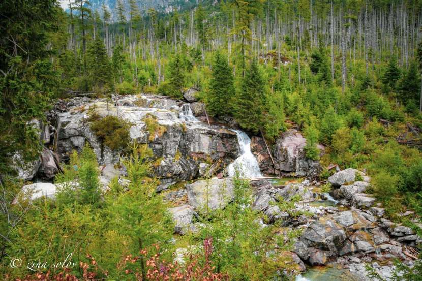
הפעם לא עשינו את הטעות עם האוכל והלכנו לאכול במסעדת Koliba Patria (קוליבה זה מסעדה מקומית), שהומלצה רבות, היום יום ראשון והמקום הומה אדם אבל נמצא לנו שולחן בקומה העליונה, אמנם פחות נוף ואווירה אבל לפחות איזור שקט. סוף סוף אכלנו אוכל טעים, אמנם השירות היה מאוד איטי, אבל המנות היו טעימות מאוד. לסיום קנינו לנו פטריה מגולפת מעץ למזכרת ונפרדנו לשלום מהטטרה הגבוהים. אני מודה שהייתי מאוד מבואסת, נורא רציתי לעשות את המסלול לאגם פופראד וממש הרגשתי שלא באמת מיציתי את האזור של האגם.
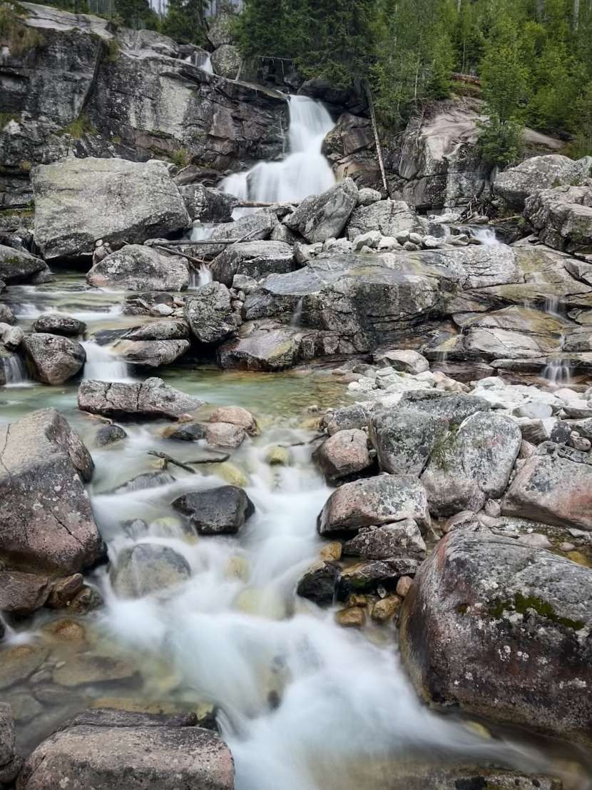
התחלנו בנסיעה לגן העדן הסלובקי לדירה האחרונה שלנו בסלובקיה, ובדרך הבחנו באגם יפיפה, החצי קלט שאני מבואסת ולכן החליט מיד לעצור ולצאת לחקור טיפה את האגם. בגוגל הוא מופיע כ Štrbský rybník, מדובר במקום מקסים, אגם מלאכותי המשמש בעיקר לדיג, אבל ממש מאחוריו משתקפים הרי הטטרה הגבוהים, בילינו במקום כחצי שעה בה פשוט שכבנו על הדשא וספגנו את השמש.
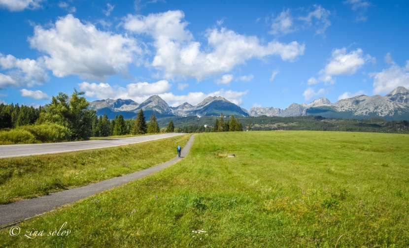
משם המשכנו לעוד הצטיידות בסניף tesco שבפאתי פופרד, ומשם לגן העדן הסלובקי, תכננו לתדלק בדרך אבל רק כשעברנו את פופראד הסתכלתי במפה כדי לגלות שאין בסביבתינו בגן העדן הסלובקי תחנות דלק, עשינו אחורה פנה וחזרנו לפופרד לתדלק ושוב יצאנו לדרך. נסיעה של כשעה אל הכפר שלנו דדינקי שבדרום האגם. שימו לב, החלק הצפוני של גן העדן הסלובקי שם נמצאים המסלולים המפורסמים של הסוחה בלה והפריאלום הרנדו מאוד קרוב לפופרד (חצי שעה נסיעה) אז אם מתכננים אותם בלבד, לדעתי לא כדאי ללון בדרום גן העדן, בסביבת דדינקי, אלא להישאר בטטרה הגבוהים או לחפש לינה בצפון הגן העדן. אני דווקא דמיינתי שחיה באגם בשעות הערב והבוקר ולכן הזמנתי שם 3 לילות (מקסימום ניסע שעה למסלול לא יקרה כלום).
לקחתי דירה בעיירה דדינקי עצמה ב-Chalets Dedinky- מדובר במתחם דירות, בלב הכפר, הדירות יפות ונקיות, ועיצוב שלהן ממש יפה. האורחים יכולים לקחת סאפ או סירת משוטים שעוגנת באגם באופן חופשי, המפתח בארון המפתחות שבחוץ והקוד כתוב בדף ההסבר שנמצא בחדר. במקום יש גם סאונה שלא יצא לנו לבקר בה וגינה מקסימה ופינות ישיבה, ומנגל, אני ממליצה מאוד, אם כי המקום פחות פרטי כמו הדירות הקודמות אלא יותר כמו מתחם צימרים. יצאנו לסיבוב היכרות סביב האגם השליו, המים שקטים כמו מראה וסביב מלא ברווזים. כאמור את הערב סיימנו בפיצריה הנמצאת ממש ליד האגם וליד הדירה שלנו, Pizza & Café Lumaro, באמת אחת הפיצות הטובות שאכלנו. וכך נגמר לו עוד יום מלא חויות.
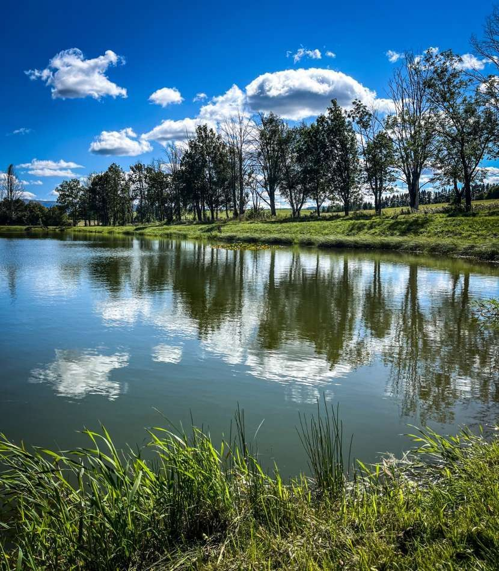
25.8.25- יום רגוע סביב האגם
סוף כל סוף פיצקה לא צולעת, אבל אנחנו עדיין לא רוצים להכביד לה על הרגל לכן הבוקר החלטנו להתפצל. אני וצוציק יוצאים למסלול קרוב וקליל- Stratenská Píla, והחצי יטייל עם פיצקה סביב האגם יסעו לסכר ואז יאספו אותנו.
המסלול יוצא ממרכז הכפר, בצבע ירוק, ועובר לאורך האגם, בשעה זו האגם שלו ונראה כמו מראה, משם עולים ליער דרך חוה קטנה (שהיתה ריקה), אנחנו כמובן התברברנו טיפה ובמקום לעלות למעלה עם השביל המשכנו לאורך האגם ומשם נכנסנו ליער בשביל צר, במקום מלא שלטים של זהירות דובים, ורק אני וצוציק שם, חשבנו שזה השביל הנכון והתקדמנו תוך כדי דיבור בקול רם (להרחיק דובים), אולם כשהסתכלתי על האפליקציה של mappy נראה שהשביל הנכון בכלל נמצא מעלינו. אפשר היה להמשיך גם בשביל הזה שהיה מביא אותנו לאותו המקום, אבל קצת חששתי ללכת בו כשרק אני והצוציק צועדים שם. חזרנו על עקבותינו עד לחווה ושם עלינו לגבעה ואל תוך היער. השביל רחב ומישורי וממש לא קשה. בשלב מסויים יש מדרגות בתוך היער ואז מגיחים מהיער אל נוף יפיפה של האגם. לאחר עוד כמה דקות הליכה (כשמקיפים את הגבעה) מגיעים לכפר משגע (לא ממש כפר אלא 3-4 בתי נופש), ואני ממש מצטערת שלא לקחנו את אחד מהם. המקום די שומם, מיד שחוים אלינו 5 ברווזים בתקוה לקבל פירורים, יש שם מזח מקסים ופוטוגני, אני וצוציק מנצלים את הזמן לצילום וממשיכים לכיוון נקודת האיסוף שלנו כבר לאורך הכביש. אם הייתי יודעת שניתן להגיע לנקודה הזו עם הרכב הייתי אומרת לחצי לחכות לנו שם, אבל לא רציתי שיסתבך ולכך את הקילומטר האחרון אני וצוציק צעדנו לאורך האגם על הכביש. סביבינו יש מלא מקומות לטיפוס צוקים וראינו כמה משפחות מטפסות.
כמה תמונות מהסמלול:
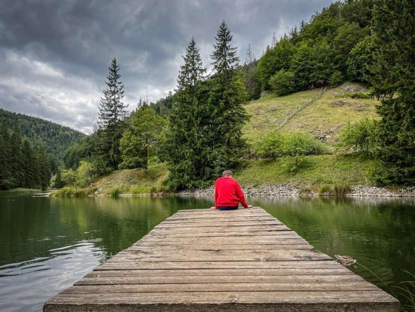
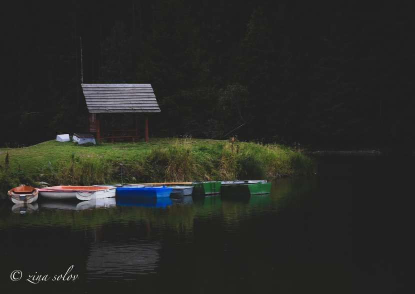
החצי חיכה לנו על הכביש ליד Chata Lesanka, וכשהבנו שניתן להגיע עם הרכב עד לכפרון הזה נסענו להראות גם לפיקצה שהיתה מבואסת שלא יכלה להצטרף, בסופו של דבר כל המשפחה זכתה לראות את הכפר המקסים.
התחנה הבאה היתה חוות הסוסים Ranch under Ostrá Skala שם יש נדנדות ענק, כמה מתקנים, מסעדה וסוסים כמובן. אכלנו שם צהריים והיה ממש טעים, התנדנדנו על הנדנדות וראינו קצת סוסים וכלבים, מקום חביב לעצירת צהריים. לא רחוק משם נמצא עוד סניף של פארק חבלים טרזניה, אבל היום הוא היה סגור וגם הצוציקים די מיצו את פארקי החבלים. כמו כן במקום נמצאת מערת הקרח המאוד מפורסמת, עליה ויתרנו גם כי העליה אליה דורשת הליכה של כחצי שעה ועדיין חששנו לרגל של פיקצה וגם כי אין לנו בגדים מתאימים לקור של -3 מעלות במערה.
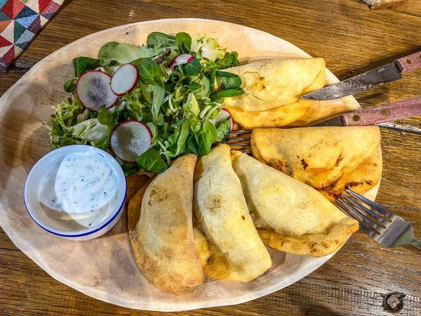
חזרנו לדירה למנוחת צהריים ובערב לקחנו את הסאפ, לנו (לחצי ולי) היה קר מידי לשחות, אבל הצוציקים נורא רצו אז הסכמנו להם להשיט את הסאפ רק בטווח קרוב לחוף (לא ממש רצינו לשחות לאמצע האגם אם יתקעו שם, למרות ששניהם שחיינים טובים יותר ממני), את היום סיימנו בארוחת על האש טובה לקראת סיום הטיול.
26.8.25- סולמות ורכבל
זהו היום האחרון המלא שלנו בסלובקיה, מחר כבר חוזרים להונגריה. במקור תכננתי לעשות את מסלול הפריאלום הרנדאו, שנראה כמסלול משגע עם סולמות, אבל לא רצינו להכביד על הרגל של פיצקה, בכל זאת מסלול של 13 קמ, לא קל, לכן בחרנו במסלול ה-Zejmarská roklina הנחשב למסלול הקל ביותר בגן העדן הסלובקי שמכיל סולמות. יצאנו לכיוון מלון דדניקי ומשם בעליה קלה בשביל דרך הכפר Biele Vody ועד לכניסה למסלול (סימן כחול) יש שם עמדת תשלום (10 יורו לארבעתינו). המסלול ממש לא קשה, יש מדפי ברזל, יש 3 סולמות, אחד מהם די גבוה, אחרי הסולם האחרון מגיעיים לנוף יפיפה מעל צוק. בסהכ מדובר בקילומטר וחצי גג 2 עד ההגעה לסיום - הנקרא greavy, אחו יפיפה שם יש פרות, ארנבים טרמפולינה ובקתה (לא טעמנו את האוכל אבל הבירה סבבה). בזמן שהצוציקים אכלו גלידה והתרוצצו סביב הפרות והארנבונים אנחנו התחרדנו בשמש עם כוס בירה טובה.
תמונות מהמסלול:
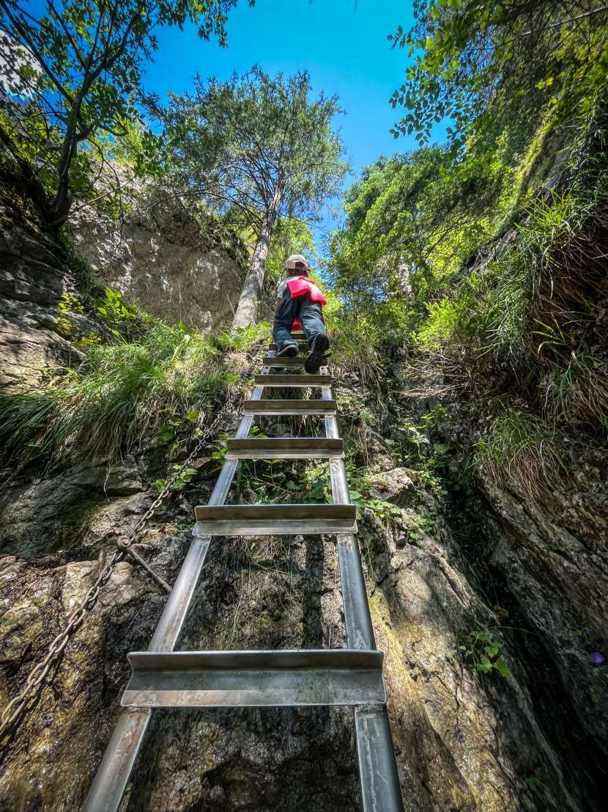
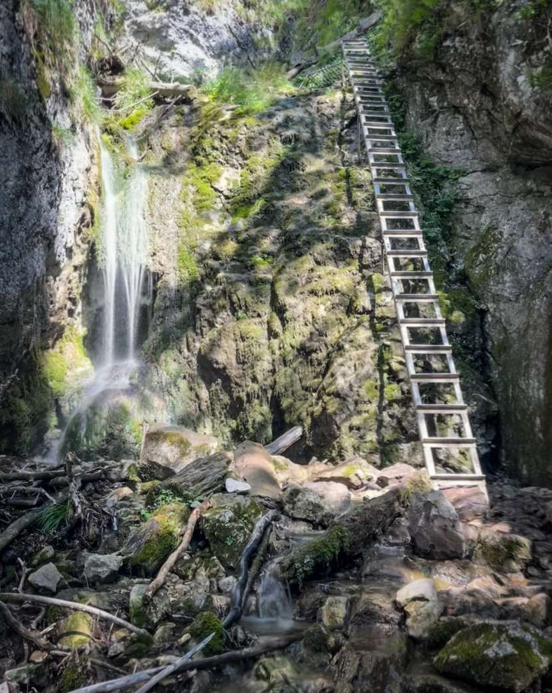
את הדרך חזרה ניתן לעשות או ברגל במסלול ירוק או לקחת רכבל כסאות חזרה לכפר דדינקי. מדובר על רכבל כסאות כשאר יש מושב אחד בלבד, בהתחלה קצת חששנו עם הילדים אבל לאחר בירור יש להם כסאות עם רתמה שאפשר לקשור את הילדים, והצוציקים עצמם נורא רצו. המחיר הוא 10 יורו למבוגר ו-7 לילד, במזומן. היינו צריכים לחכות לכסאות המיוחדים לילדים שמגיעים עם חגורה ורתמה, בהתחלה עלה החצי, אחריו פיצקה צוציק ואני לסיום. הרכבל איטי וכיפי, די ארוך, בסופו נוף מהמם של האגם, הצוציקים פיטפטו כל הדרך ונהנו מכל רגע. מתחנת הרכבל צעדנו דרך בתי הכפר חזרה לדירה ולמנוחת צהריים.
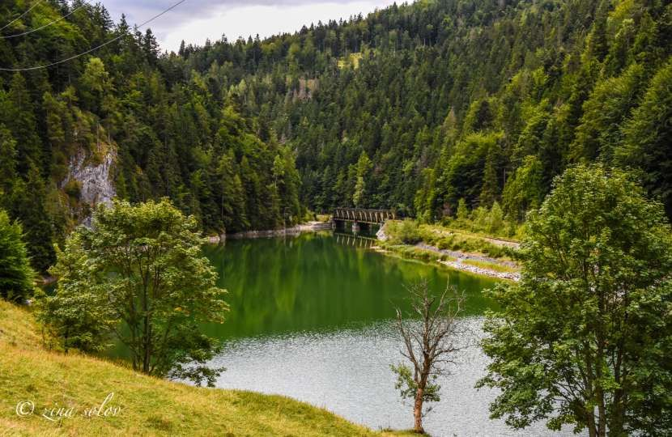
בערב לקחנו הפעם את סירת המשוטים של הדירה ויצאנו לשייט באגם. שם צוציק פיקד עליו כיצד לחתור ולאיזה כיוון, כשהילד ממש עיצבן אותנו נתנו לו לחתור לבד שיבין שזה לא כזה קל כמו שזה נראה.
אחרי שמיצינו את השייט החלטנו לנסוע מעט רחוק יותר (כחצי שעה) עד לבית הקפה Depo Café Telgárt, מדובר בקפה קטן בתוך אוטובוס באיזור יפה, העוגה שלהם מדהימה! ובמקום יש מכונית מהסרט הארי פוטר ואוטובוס הקסמים מה שהעסיק את הצוציקים, יש שם גם משחקים ופינת ליטוף, ובמרחק הליכה גשר קשתות חביב. לא הייתי ממליצה להגיע במיוחד אבל אם אתם בסביבה זו עצירה חביבה למדי.
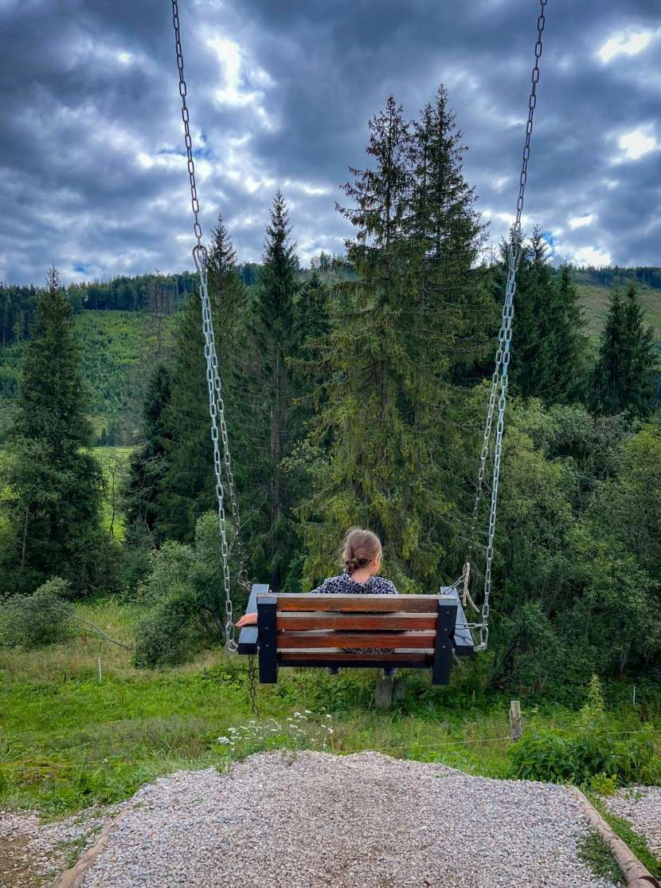
עייפים ומרוצים חזרנו לדירה, ולארוחת הערב אכלנו את הפיצה הטעימה מהמסעדה ליד. תם ונשלם הטיול בסלובקיה, הונגריה אנחנו באים!
27.8.25- בודפשט
זהו זה, תם ונשלם הטיול בסלובקיה. אורזים את המזוודות ונפרדים מהצימר והאגם החביב.
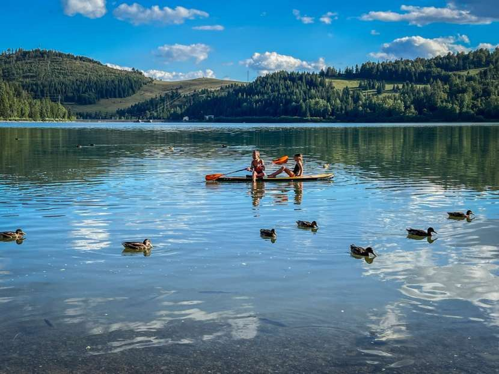
יוצאים לדרך לנסיעה של 3 וחצי שעות, לא ממש מצאנו משהו שווה לעצור בדרך (אנחנו לא רצינו להאריך את הדרך בעצירות אבל למי שבכל זאת מחפש עצירות ניתן לעצור במערת domica על הגבול או לסטות מעט לעיר Miskolc), אנחנו נסענו רצוף למעט עצירה קלה בתחנת דלק להתרעננות. עברנו דרך העיר eger, קראתי שיש שם בית קפה נחמד בסגנון הסדרה חברים, אבל אף מד חניה בסביבה לא קיבל כרטיס אשראי אז התייאשנו והמשכנו בנסיעה לבודפשט. נסענו ישירות לשדה התעופה, לאחר ניקיון הרכב החזרנו אותו לתחנת ההשכרה ותפסנו מונית בולט למרכז העיר. הגענו למלון שנתאכסן בו ביומיים הקרובים: Silver crown hotel &residence, Palace quarter, הזמנתי דירת 2 חדרים וסלון, החדר מרווח נקי ונעים, והכי חשוב יש מזגנים כי הגענו לחום של 35 מעלות, ככה מרפי החליט שכבר מעכשיו נתרגל לחום של הארץ אחרי הקרירות הנעימה של סלובקיה.
לאחר שפרקנו את הדברים היינו נורא רעבים ובעיקר לי ולצוציקים היתה דודא לסושי, ראיתי כמה סושיות ממש לידנו ואחת מה היתה ממש ליד בית הכנסת Oishi Sushi Synagogue- הסושי היה מעולה! השירות מצויין ואכלנו לשובע!
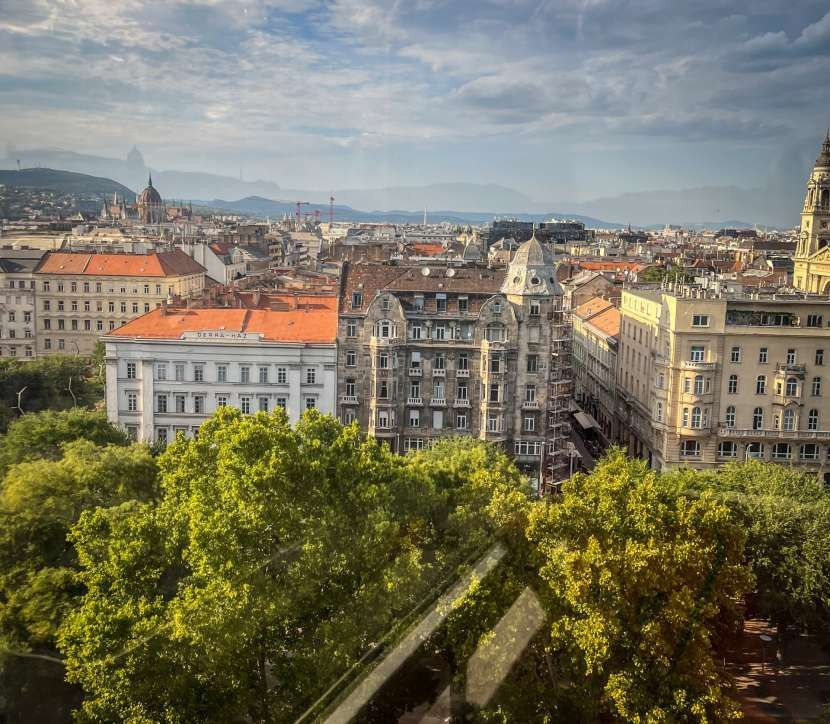
אחרכך שוטטנו בעיר, הגענו לגלגל הענק בכיכר אליזבת, לא זול אבל בכל זאת עליתי עם הצוציקים לסיבוב. משם התקדמנו לכיוון הדנובה, לא רצינו שייט אבל בסוף הצוציקים שכנעו אז לקחנו את השייט מרציף 5 שיצא תוך 5 דקות, קיבלנו אוזניות ויש הסבר בעברית וגם משקאות שכלולים במחיר, הצוציקים התעניינו בהסבר עד שאיבדו עניין ואז שוטטו על האוניה ונהנו מהמשקה שלהם (לימונענע). לאחר מכן צעדנו חזרה למלון (15 דקות הליכה) וכמובן שבדרך קינחנו קצת בגלידה. היינו כלכך שבעים מהסושי שלא רצינו בכלל ארוחת ערב, כולנו הסתפקנו בקינוח הגלידה שלנו וחזרה למלון.
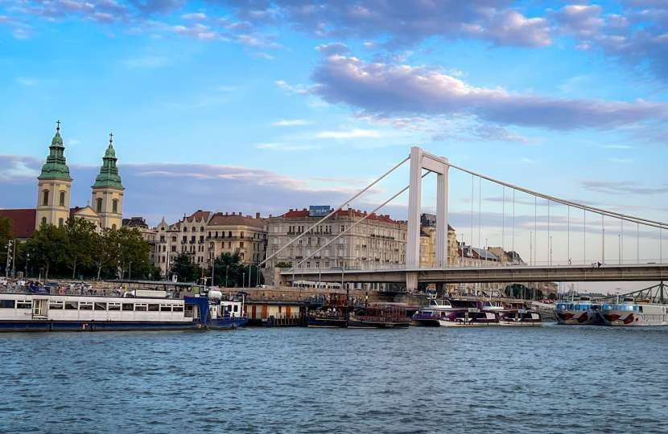
28.8.25- הפתעה לסיום
כך מהר מהר הגיע היום האחרון לטיול. לא לקחנו ארוחת בוקר במלון ויצאנו במקום למצוא לנו קפה נחמד לארוחת הבוקר, מחיפוש בגוגל מצאתי מסעדה ממש ליד בית הכנסת שנקראת ״מטרלו״ השם נשמע לי ממש מוכר אבל לא זכרתי למה, הביקורות היו טובות אז הלכנו לשם. מיד כשקיבלנו את התפריט נפל לי האסימון למה השם מוכר, מדובר במסעדת מטרלו שהיתה פעם בעין זיוון שנסגרה במחלמה והם עברו לבודפשט. מסעדה ישראלית, מלצרים ישראלים ואורחים ישראלים, פיצקה מיד פגשה ילדה שאיתה קישקשה בעברית לאורך כל ארוחת הבוקר, הילדים התגעגעו לחברה.
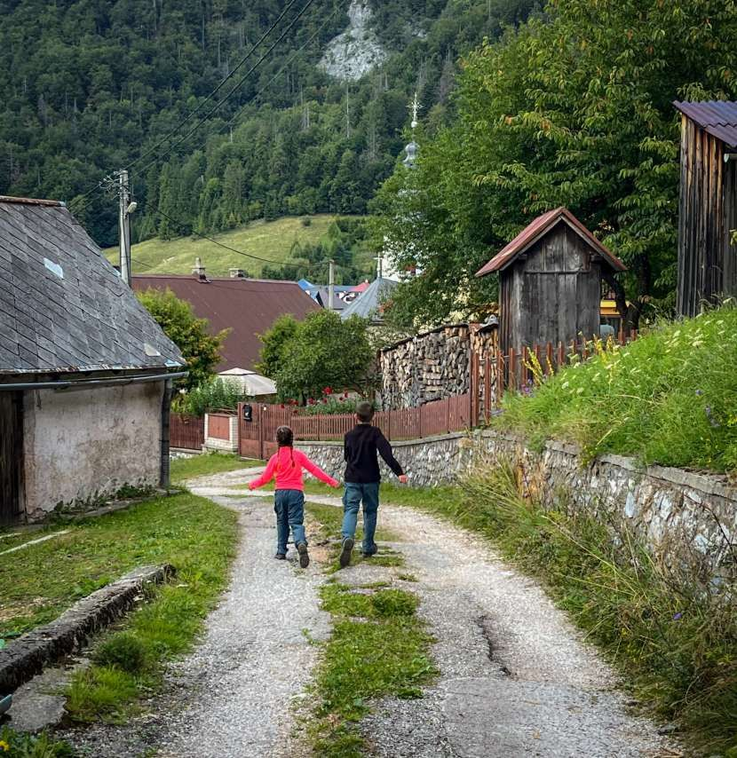
משם הלכנו לתחנת המטרו לקנות כרטיס יומי ועלינו על המטרו לכיוון הפארק העירוני. הפארק ענקי, נעים מוצל. טיילנו דרך הטירה ומשם לבית המוסיקה (לא נכנסנו לתצוגה ואולי חבל כי לא ממש הבנו על מה המהומה שם).
משם מצאנו את מתקני השעשועים והצוציקים השתוללו, יש גם משחקי ומתקני מים אז כדאי להביא בגדים להחלפה. אחרי מנת גדליה וברד ושעתיים וחצי טיול, החום פשוט הכריע אותנו וחזרנו למלון לשנ״צ.
לאחר המנוחה שוב יצאנו לאכול צהריים/ערב בסושיה מאתמול והמשכנו להפתעה שארגנתי לכולם: איזיריידר!
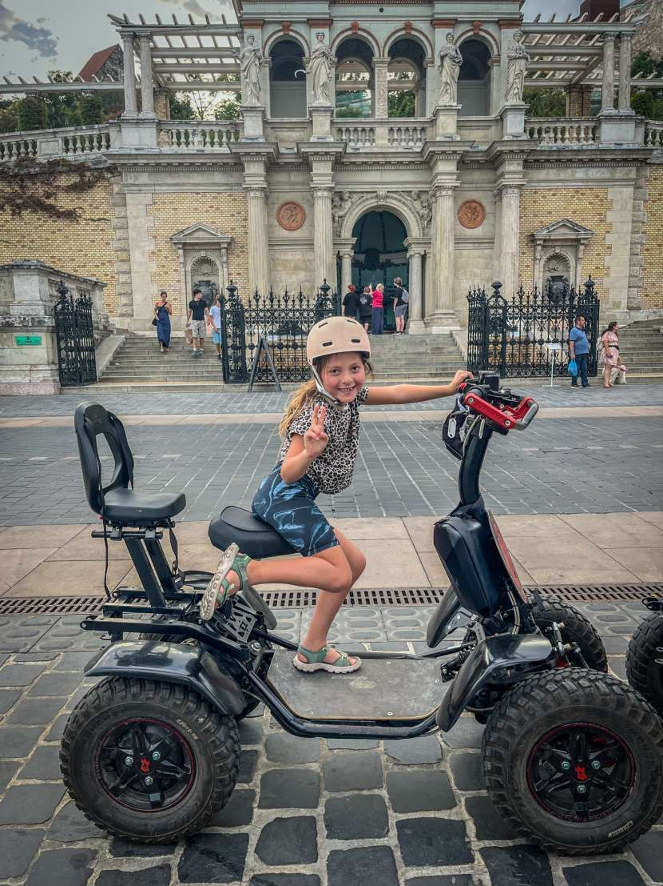
מדובר על סיור של שעה וחצי ברחובות בודפשט ע״ג האיזיריידר, חברה ישראלית ומדריך בעברית, הילדים רכובים מאחור כך הם רואים את העיר ולא אוכלים לנו את הראש בגלל שצריך ללכת הרבה ברגל, המחיר קצת יקר- 160 יורו ל-2 מבוגרים ושני ילדים אבל זה היה סיום מושלם לטיול מושלם! הגענו לנקודת המפגש בחמש וחצי, אחרי רישום ותשלום עברנו הדרכה איך לנסוע על הרכב ויצאנו בשיירה לכיוון מצודת הדייגים כמובן עם עצירה בגשר אליזבת ועוד כמה עצירות להסבר צילום ותצפית. במצודת הדייגים היה לנו חצי שעה להסתובב ובגלל שהגענו בשקיעה היו משמעותית פחות אנשים במקום. וחזרה לנקודת המפגש. הנסיעה מהנה, לא מסוכנת והילדים נהנו מכל רגע! כך גם ראינו טיפה יותר מבודפשט כי בחום הנוראי לא באמת אפשר לטייל בעיר. נפרדנו מהמדריכים ושוב חזרנו למלון, אף אחד לא היה רעב. ארזנו את המזוודות והלכנו לישון, מחר השקמה מוקדמת לטיסה.
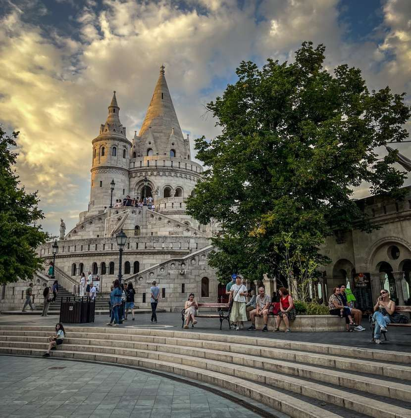
29.8.25- הביתה
קמנו בחמש בבוקר, התארגנו מהר, והמונית שהזמנתי דרך בולט אתמול בלילה כבר חיכתה לנו. הגענו לשדה ומשם לטיסת הבוקר חזרה ארצה.
תם ונשלם.
כמה מילים לסיכום:
סלובקיה מדהימה, הטבע משגע, שפע אטרקציות, מסלולי טיולים ומה לא, סל הקניות זול ממש ושפע של מבחר. לא נתקלנו בתורים לאתרים, לא נתקלנו ביחס עויין, הכבישים והתשתיות מצויינים.
אבל, מחירי האטרקציות, רכבלים, חניות לרכב, ומסעדות מאוד גבוה,ומתקרב למחירים באוסטריה ובמערב אירופה, (זאת בכל זאת סלובקיה) וזה מבאס. בטוח שנחזור ובפעם הבאה נשלב עם דרום פולין.
תודה שקראתם.
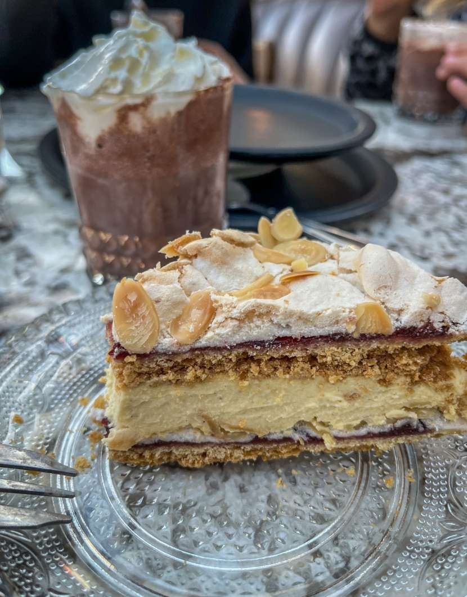